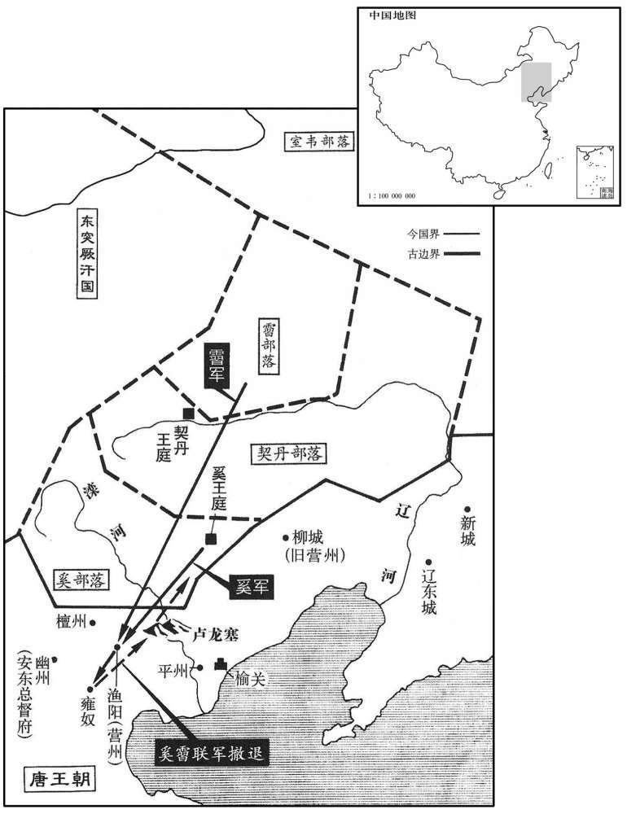
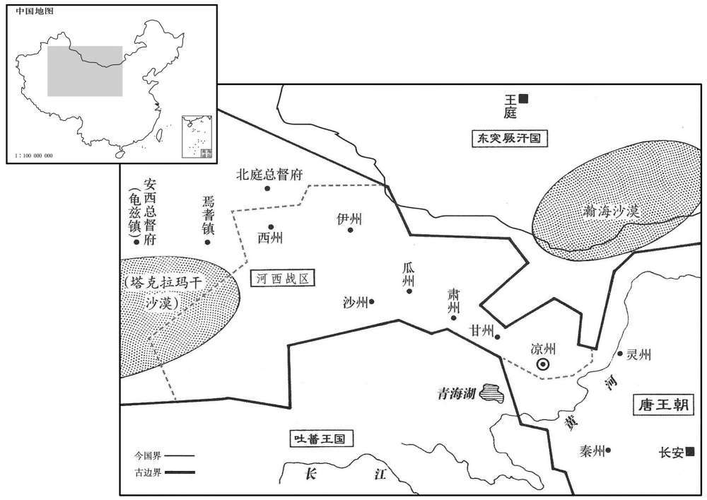
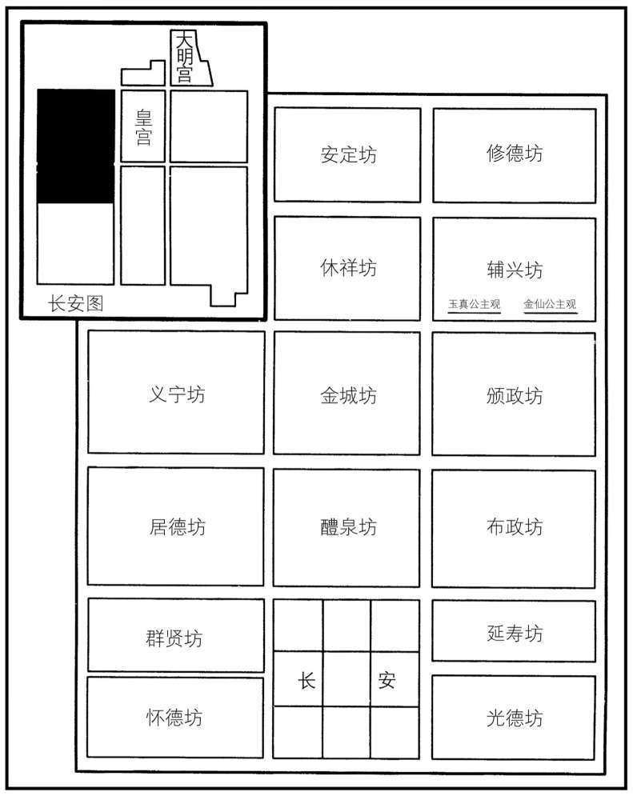
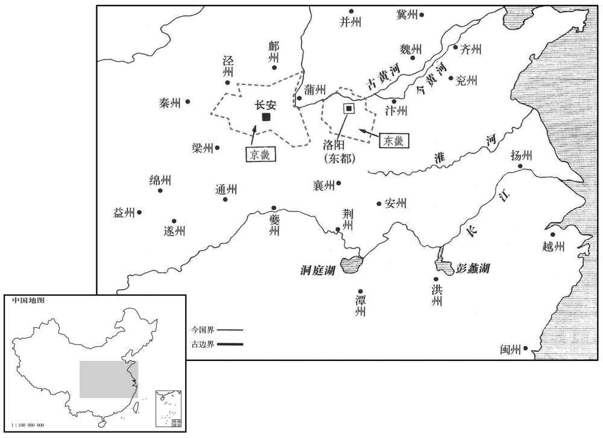
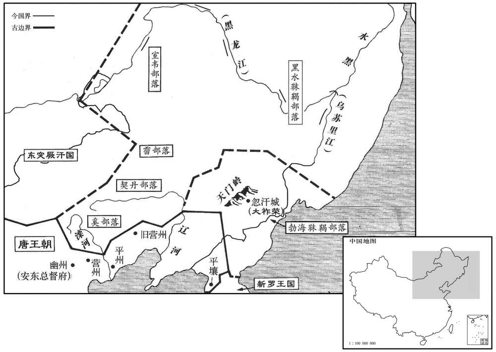

卷次与人物目录 / 卷210
资治通鉴 · 卷第二百一十【唐纪二十六】
公元710年至公元713年 · 原文、白话与胡三省注
本页按胡注本编排保存全卷内容。白话采用本站所据译本，未可靠对应的内容另列说明；事件标题用于定位，并非原书文字。
本卷共148段原文，143段有译文对应，5段缺译或待核对。
卷第二百一十【唐纪二十六】起上章淹茂（庚戌）八月，尽昭阳赤奋若（癸丑）凡三年有奇。
卷首原文与注释
睿宗玄真大圣大兴孝皇帝下
公元710年 · 唐睿宗玄真大圣大兴孝皇帝景云元年
景云元年〔（庚戌、七一○）〕
上传原文的注释括号有异常，字符原样保留；无法可靠划分的段落默认全文显示。
本年记事分属相邻卷，按原书顺序分别保留：第209卷 · 第210卷。
本年事件索引（现代整理）
- 谯王李重福在东都举兵，崔日知发兵讨伐
- 李重福兵败逃亡，最终投漕渠自尽
- 郑愔、张灵均谋反被处斩
- 万骑因平乱恃功横行，被调离京城
- 姚元之等请求废除斜封官，数千人被罢
- 裴谈被贬为蒲州刺史
- 追赠苏安恒为谏议大夫
- 唐休璟任朔方道大总管
- 姚元之、宋璟请求迁移义宗神主
- 武则天追复大圣天后尊号
- 薛讷任幽州都督，节度使之名自此开始
- 太平公主暗中议论改立太子，李隆基不安
- 韦凑反对追谥李重俊为节愍太子
- 姚元之任中书令
- 唐中宗葬于定陵，韦后不祔葬
- 韦安石、苏瑰罢任侍中和左仆射
- 追复裴炎官爵
- 裴軎先历经流放、逃亡后复任詹事丞
- 追复王同皎官爵
- 苏瑰去世，睿宗准许其子苏颋守丧
- 宁原悌劝睿宗勿为女儿修建奢丽道观
- 李朝隐拒绝宦官请托，睿宗公开嘉奖
- 奚、霫侵掠渔阳、雍奴后撤退
- 宋璟整顿吏部选官，铨选公平严明
- 倪若水弹劾祝钦明、郭山恽乱礼媚上
- 睿宗称赞杨孚不避权贵弹劾
- 设河西节度使，统辖凉州等七州
- 李知古侵扰姚州蛮民，被杀导致边路断绝
- 杨矩将河西九曲之地割让吐蕃作金城公主汤沐邑
八月，庚寅，往巽第按问。〔此承上卷洛阳县官微闻其谋。〕重福奄至，县官驰出，白留守；群官皆逃匿，洛州长史崔日知独帅众讨之。〔重，直龙翻。守，式又翻。长，知两翻。帅，读曰率。〕
八月庚寅（十二月），洛阳县吏前往裴巽家中检查讯问，李重福等人突然来到。县吏急忙跑出裴宅，将其所见全部告诉了东都留守。东都大小衙门官员在听到这一消息后全都逃走或者躲藏起来，只有洛州长史崔日知率领部下讨伐李重福。
留台侍御史李邕遇重福于天津桥，从者已数百人；驰至屯营，〔从，才用翻。即洛城左、右屯营也。〕告之曰：「谯王得罪先帝，〔言重福得罪中宗，居之均州。〕今无故入都，此必为乱；君等宜立功取富贵。」又告皇城〔东都皇城也。〕使闭诸门。重福先趣左、右屯营，营中射之，〔趣，七喻翻。射，而亦翻。〕矢知雨下。乃还趣左掖门，〔还，从宣翻。掖，音亦。〕欲取留守兵，见门闭，大怒，命焚之。火未及然，左屯营兵出逼之，重福窘迫，策马出上东，〔然，与燃同。窘，渠陨翻。上东，洛城上东门也，东面北来第一门。〕逃匿山谷。明日，留守大出兵搜捕，重福赴漕渠溺死。〔考异曰：睿宗实录、旧本纪皆云「癸巳重福反。」今从太上皇实录。〕日知，日用之从父兄也。〔从，才用翻。〕以功拜东都留守。
留台侍御史李邕与李重福在天津桥相遇，发现李重福手下已经有了数百名追随者，便快马加鞭地赶到东都左、右屯营的驻地，告诉他们说：“谯王李重福获罪于先帝，现在突然无故进入东都，这一定是准备作乱，你们应当趁此机会为朝廷立功以博取荣华富贵。”说完又跑去告诉守卫皇城的将官，让他们将所有城门全部关闭。李重福先赶赴左、右屯营，但营中将士向他放箭，箭如雨下。李重福回身走到左掖门，想征调东都留守的部队，却又见城门紧闭，便气急败坏地命令手下人放火焚烧城门，但还没等火点燃，左屯营的士兵已经冲出营地向他逼过来。李重福走投无路，只好打马跑出洛阳上东门，逃进山谷中藏匿起来。第二天，东都留守派出大批军队进山搜捕，李重福投漕渠自杀。崔日知是崔日用的堂兄，他因此次平定李重福叛乱之功而被任命为东都留守。
郑愔貌丑多须，既败，梳髻，着妇人服，匿车中；〔愔，于今翻。着，陟略翻。〕擒获，被鞫，股栗不能对。〔被，皮义翻。〕张灵均神气自若，顾愔曰：「磿与此人举事，宜其败也！」与愔皆斩于东都市。初，愔附来俊臣得进；俊臣诛，附张易也；易之诛，附韦氏；韦氏败，又附谯王重福，竟坐族诛。〔史言张灵均虽幸祸好乱之人，犹能临死不变。郑愔者，反复于群憸之间，冒利不顾，而畏死乃尔，乌足以权大事乎！〕严善思免死，流静州。〔岭南之静州，贞观中已改为富州。此静州属剑南，仪凤元年，以悉州之悉唐县置南和州，武后天授二年，更名静州。严善思死而流此，夙依嬖幸，今从乱又得以偷生。〕
郑相貌丑陋，又长满了络腮胡子，起事失败后，他梳起了发髻，穿上妇女穿的衣服，藏在车中。被抓获受审时恐惧得两腿发抖，不能回答问题。张灵均则始终神态自若，他回头看着郑说：“我和你这样的胆小鬼一同举事，落得失败的结局是很正常的！”张灵均和郑一起在东都洛阳闹市被处以斩刑。当初，郑靠依附来俊臣而得以升迁；来俊臣被杀后，又依附张易之；张易之伏诛后，又依附韦后；韦后被杀后，又转而依附谯王李重福，最终还是因李重福起事失败而被灭族。严善思被免于死刑，流放到静州。
万骑恃讨诸韦之功，多暴横，〔骑，奇寄翻。横，户孟翻。〕长安中苦之；诏并除外官。又停以户奴为万骑；〔户奴为万骑，盖必起于永昌之后。〕更置发骑，隶左、右羽林。〔更，工衡翻。〕
万骑兵倚仗着讨平韦氏集团的功劳，大多横行不法，从而成为长安百姓的一大祸害。唐睿宗下诏将万骑兵全部放到京外去作官，同时下令停止从官户奴隶中选拔万骑兵，并另外设置隶属于左、右羽林卫的飞骑军。
姚元之、宋璟及御史大夫毕构上言：「先朝斜封官悉宜停废。」〔璟，居影翻。上，时掌翻。朝，直遥翻。〕上从之。癸巳，罢斜封官凡数千人。〔斜封官见上卷中宗景龙三年。〕
姚元之、宋及御史大夫毕构向唐睿宗提出建议：“先朝所任命的斜封官应当全部予以废黜。”唐睿宗表示同意。癸巳（十五日），唐睿宗免去了数千名斜封官的职务。
刑部尚书、同中书门下三品裴谈贬蒲州刺史。〔旧志：蒲州，京师东北三百二十四里。尚，辰羊翻。〕
刑部尚书、同中书门下三品裴谈被贬为蒲州刺史。
赠苏安恒谏议大夫。〔苏安恒死见二百八卷中宗景龙元年。恒，户登翻。〕
唐睿宗追赠苏安恒为谏议大夫。
九月，辛未，以太子少师致仕唐休璟为朔方道大总管。〔少，始照翻。〕
九月辛未（二十三日），唐睿宗任命已经退休的太子少师唐休为朔方道大总管。
冬，十月，甲申，礼仪使姚元之、未璟奏：〔唐世凡有国恤，皆以宰相为礼仪使，掌山陵、祔庙等事。使疏吏翻。〕「大行皇帝神主，应祔太庙，请迁义宗神主于东都，别立庙。」从之。〔义宗祔庙见二百八卷中宗神龙元年。〕
冬季，十月，甲申（初七），礼仪使姚元之、宋上奏道：“已故未葬的中宗皇帝的神主应当迁入太庙受祭，请陛下下诏将义宗皇帝的神主迁到东都另外立庙祭祀。”唐睿宗采纳了他们的建议。
乙未，追复天后尊号为大圣天后。
乙未（十八日），唐睿宗下诏恢复天后武则天大圣天后的尊号。
丁酉，以幽州镇守经略节度大使薛讷为左武卫大将军兼幽州都督。节度使之名自讷始。〔使，疏吏翻。考曰：统纪：「景云二年，四月，以贺拔延秀为河西节度使，节度之名自此始。」会要云：「景云二年，贺拔延嗣为凉州都督，充河西节，始有节度之号。」又云：「范阳节度自先天二年始除甄道一。」新表：「景云元年置河西诸军州节度、支度、营田大使。」按讷先已为节度大使，则节度之名不始于延嗣也。今从太上皇实录。是后天宝缘边御戎之地，置八节度使，其任愈重。受命之日，赐双旌、双节，得以专制军事。行则建节，树六纛，入境，州县筑节楼，迎以鼓角，衙仗居前，旌幢居中，大将鸣珂，金钲、鼓角居后，州县赍印迎于道左。又唐之制，有节度大使、副大使、节度使；其亲王领节度大使而不出合，则在镇知节度者为副大使；其异姓为节度使者有节度副使。至后唐开成二年七月敕：「顷因本朝亲王遥领方镇，其在镇者，遂云副大使佑节度事，但年代已深，相沿未改。今天下侯伯并正节旄，其未落副大使者，祗言节度使。」〕
丁酉（二十日），唐睿宗任命幽州镇守经略节度大使薛讷为左武卫大将军兼幽州都督。节度使之名即从薛讷开始。
太平公主以太子年少，意颇易之；既而惮其英武，欲更择闇弱者立之以久其权，数为流言，云「太子非长，不当立。」〔少，诗照翻。易，以豉翻。数所角翻。〕己亥，制弁谕中外，以息浮议。公主每觇伺太子所为，纤介必闻于上，〔觇，丑廉翻，又丑艳翻。伺，相吏翻。〕太子左右，亦往往为公主耳目，太子深不自安。〔为诛太平公主及其支党张本。〕
太平公主认为太子李隆基还很年轻，因而起初并未把太子放在心上；不久之后又因惧怕太子的英明威武，转而想要改立一位昏庸懦弱的人作太子，以便使她自己能长期保住现有的权势地位。太平公主屡次散布流言，声称“太子并非皇帝的嫡长子，因此不应当被立为太子。”己亥（二十二日），唐睿宗颁下制书晓谕警告天下臣民，以平息各种流言蜚语。太平公主还常常派人监视太子李隆基的所作所为，即使一些细微之事也要报知唐睿宗，此外，太平公主还在太子身边安插了很多耳目，太子心里感到十分不安。
谥故太子重俊曰节愍。太府少卿万年韦凑上书，以为：「赏罚所不加者，则考行立谥以褒贬之。〔上，时掌翻。行，下孟翻。〕故太子重俊，与李多祚等称兵入宫，中宗登玄武门以避之，太子据鞍督兵自若；及其徒倒戈，多祚等死，太子方逃窜。向使宿卫不守，其为祸也胡可忍言！明日，中宗雨泣，〔雨泣者，泪下如雨也。〕谓供奉官曰：〔中书、门下两省官谓之供奉官。〕『几不与卿等相见。』其危如此。〔几，居希翻。〕今圣朝礼葬，谥为节愍，臣窃惑之。夫臣子之礼，过庙必下，〔下，遐嫁翻。〕过位必趋。汉成帝之为太子，不敢绝驰道。〔汉成帝为太子，初居桂宫。元帝尝急召之，太子出龙楼门，不敢绝驰道，西至直城门，得绝乃度，还入作室门。上迟之，问其故，以状对；乃着令太子得绝驰道。〕而重俊称兵宫内，跨马御前，无礼甚矣。若以其诛武三思父子而嘉之，则兴兵以诛奸臣而尊君父可也；今欲自取之，是与三思竞为逆也，又足嘉乎！若以其欲废韦氏而嘉之，则韦氏于时逆状宋彰，大义未绝，苟无中宗之命而废之，是胁父废母也，庸可乎！汉戾太子困于江充之谗，发忿杀充，虽兴兵交战，非围逼君父也；兵败而死，〔事见二十二卷武帝征和二年。〕及其孙为天子，始得改葬，犹谥曰戾。〔见二十四卷宣帝本始元年。〕况重俊可谥之曰节愍乎！臣恐后之乱臣贼子，得引以为〔心，开悖逆之，原非所以彰善瘅恶也，〔彰，明也；瘅，病也。明其为善，病其为恶者也。瘅，丁但翻。〕请改其谥。多祚等从重俊兴兵，不为无罪。陛下今宥之可也，名之为雪，亦所未安。」上甚然其言，而执政以为制命已行，不为追改，〔为，于伪翻。〕但停多祚等赠官而已。
唐睿宗颁下制书，将已故太子李重俊谥为节愍。太府少卿万年人韦凑上书认为：“对于那些没有受到赏赐或者处罚的人，应根据其生前的所作所为赠予谥号，以示对他们一生功过的褒贬。原太子李重俊与李多诈等人举兵闯入宫中，致使中宗不得不登上玄武门以躲避他们，太子却还能够神态自若地骑在马上督率士兵；只是到了他的徒众临阵倒戈李多祚等人已经被杀之后，太子才不得不落荒而逃。假如当时把守玄武门的侍卫抵挡不住的话，那么李重俊所造成的祸害将不堪设想！第二天，中宗皇帝泪如雨下地对中书、门下两省的官员们说：‘朕差一点就见不到诸位了。’当时的情形竟然危急到这种地步。现在朝廷对李重俊以礼安葬，还要将他谥为节愍，臣内心深处的确感到迷惑不解。依据臣子侍奉君主的礼节，大臣经过太庙必须下马，经过君主的宝座必须恭恭敬敬地小步快走。汉成帝作太子时，虽然是受到了汉元帝的紧急召见，尚且不敢横穿驰道，而太子李重俊居然敢于在皇宫之内兴兵造反，在中宗皇帝的面前横刀立马，这实在是太无礼了。嘉奖他起兵诛杀武三思父子是可以，但只有在他起兵铲除奸臣是为了尊崇皇帝的时候才可以这样做。现在他是为了自己当皇帝，那就只能说明他与武三思一样，都是图谋不轨的乱臣贼子，对这样的人还值得立谥嘉奖吗！如果因为他起兵是为了废掉韦后而嘉奖他，则当时韦后谋反的表现还不太明显，与太子之间母子君臣的大义尚未断绝，如果没有中宗的命令就擅自起兵废掉她，这就是胁迫父亲废弃母亲，又怎么可以呢！汉武帝时期戾太子因受江充的诬陷而发泄愤懑，起兵杀死江充，虽然也动用了兵马，但戾太子并没有围困逼迫他的父亲汉武帝。戾太子兵败自杀后，一直等到他的孙子汉宣帝即位时才得以改葬，但还是将他谥为戾。何况李重俊行为如此，陛下怎么能将他谥为节愍呢！臣担心后世的乱臣贼子会援引李重俊这一先例，为违乱忤逆行为大开方便之门，这恐怕不是用来彰善惩恶的有效方法。请陛下给李重俊改赐一个别的谥号。李多祚等人追随李重俊起兵，也不能说没有罪过，陛下现在可以宽宥他们所犯的罪行，但口口声声地说为他们平反昭雪，恐怕还不太合适。”唐睿宗非常赞同他的意见，但具体主管的官员认为皇帝的制命已经颁行，因而不愿再改变谥号，只是取消给李多祚等人的赠官而已。
十一月，戊申朔，以姚元之为中书令。
十一月，戊申朔（初一），唐睿宗任命姚元之为中书令。
己酉，葬孝和皇帝于定陵，〔定陵在雍州富平城西北十五里。〕庙号中宗。朝议以韦后有罪，不应祔葬。追谥故英王妃赵氏曰和思顺圣皇笁，求其瘗，莫有知者，〔妃死见二百二卷高宗上元二年。〕乃以祎衣招魂，〔唐制：皇后之服三：祎衣、鞠衣、襢衣。祎衣者，受册、助祭、朝会大事之服也。深青织成为之，画翚，赤质，五色，十二等，素纱中单，黼领，朱罗谷褾纐，蔽膝随裳色，以致领为缘，用翟为章，三等，青衣革带，大带随衣色，裨约纽佩绶如天子，青袜，舄加金舄。〕覆以夷衾，〔覆，敷又翻。〕祔葬定陵。
己酉（初二），唐睿宗将孝和皇帝葬于定陵，庙号中宗。朝廷中议论认为韦皇后犯有大罪，不应当将她的灵柩与唐中宗合葬。唐睿宗将已故英王王妃赵氏追谥为和思顺圣皇后，派人四处寻找她埋葬的地方，但没有人知道她葬在哪里，最后只得用皇后的衣来为她招魂，然后在衣上盖上覆盖尸体的被子夷衾，合葬于定陵。
壬子，侍中韦安石罢为太子少保，左仆射、同中书门下三品苏緕罢为少傅。
壬子（初五），侍中韦安石被罢免为太子少保；左仆射、同中书门下三品苏被罢免为太子少傅。
甲寅，追复裴炎官爵。
甲寅（初七），唐睿宗下诏追复裴炎的官职爵位。
初，裴軎先自岭南逃归，复杖一百，徙北庭。〔軎，读曰胄。复，扶又翻。〕至徙所，殖货任侠，常遣客诇都下事。武后之诛流人也，〔裴炎死，軎先流岭南，见二百三卷武后光宅元年。诛流人见二百五卷长寿二年。诇，休正翻。〕軎先先知之，逃奔胡中；北庭都护追获，囚之以闻。使者至，流人尽死，軎先以待报宋杀。既而武后下制安抚流人，有未死者悉放还，軎先由是得归。至是求炎后，独軎先在，拜詹事丞。〔詹事丞，正六品上，掌判詹事府事。〕
当初，裴先从岭南逃回，又被杖打一百，流放到北庭。裴先在流放地北庭经商，又干一些打抱不平的侠义之事，他还常常派人到长安打听各种消息。他事先得知武则天即将派遣使者出京诛杀被处以流刑的罪犯，便在使者到来之前逃到胡人的地盘躲避，后被北庭都护派兵捉回，关进监狱并上报武则天。使者来到北庭后，流刑犯全部被杀，只有裴先因等待武则天的批示而没有立即被杀。过了一段时间武则天又下诏安抚流刑犯人，规定未被处死的全部放还原籍，裴先因此得以回到长安。到这时候，唐睿宗下食寻找裴炎的后人，只有裴先一人在世，于是将他任命为詹事丞。
壬戌，追复王同皎官爵。〔王同皎死见二百八卷中宗神龙二年。〕
壬戌（十五日），唐睿宗下令追复王同皎的官爵。
庚午，许文贞公苏坏薨。制起复其子颋为工部侍郎，颋固辞。〔颋，他鼎翻。〕上使李曰知谕旨，日知终坐不言而还，〔坐，徂卧翻。〕奉曰：「臣见其哀毁，不忍发言，恐其陨绝。」上乃听其终制。
庚午（二十三日），许文贞公苏去世。唐睿宗颁发制命，任命正在为父服丧的苏之子苏为工部侍郎，苏坚决推辞不受。唐睿宗派李日知前去传达自己的旨意，李日知在苏家坐了半晌，却只字未提自己的来意便回朝复命，他对唐睿宗回奏道：“臣见到苏悲痛欲绝的样子，实在不忍心把要说的话讲出来，担心他会发生意外。”于是唐睿宗便允许苏为其父服满三年丧期。
十二月，癸未，上以二女西城、隆昌公主为女官，以资天皇太后之祏，仍欲于城西造观。〔观，古玩翻。道士所居曰观。〕谏议大夫宁原悌上言：以为「先朝悖逆庶人以爱女骄盈而及祸，新城、宜都以庶呩抑损而获全。〔新城公主下嫁武延晖，宜城公主下嫁裴巽，皆中宗女。〕又释、道二家皆以清净为本，不当广营寺观，劳人费财。梁武帝致败于前，先帝取灾于后，殷鉴不远。今二公主入道，将为之置观，〔观，古玩翻。为，于伪翻。〕不宜过为崇丽，取谤四方。又，先朝所亲狎诸僧，尚在左右，宜加屏斥。」〔朝，直遥翻。屏，卑郢翻。〕上览而善之。
十二月，癸未（初七），为助天皇太后武则天的冥福，唐睿宗让他的两个女儿西城公主和隆昌公主作女道士，并准备在长安城西建造道观。谏议大夫宁原悌向唐睿宗进言认为：“先朝悖逆庶人作为中宗和韦后的爱女而骄傲自满，终于难逃杀身之祸；新城公主和宜都公主作为中宗的庶出之女而谦卑自制，终于得以保全。再说佛教和道教均以清净为本，不应耗费大量的人力物力广造佛寺道观。南朝梁武帝佞佛招致祸败于前，中宗广营佛寺道观致使国家多难于后，这样的历史教训距今不远。现在西城公主和隆昌公主作了女道士，陛下将为他们营建道观，营建时不应当过分豪华壮观，以免招来朝野士民的非议。此外，先朝中宗皇帝所宠幸的僧人们仍在陛下身边，应当一律斥退。”唐睿宗看了他的奏章之后，认为他说的很对。
宦者闾兴贵以事属长安令李朝隐，〔属，之欲翻。朝，直遥翻；下同。〕朝隐系于狱。上闻之，召见朝隐，劳之曰：「卿为赤县令，能如此，朕复何忧！」〔劳，力到翻。复，扶又翻；下无复同。〕因御承天门，集百官及诸州朝集使，宣示以朝隐所为。且下制称「宦官遇宽柔之代，必弄威权。朕览前载，每所叹息。能副朕意，实在斯人，可加一阶为太中大夫，赐中上考及绢百匹。」
宦官闾兴贵托长安令李朝隐为他办事，李朝隐将他逮捕入狱。唐睿宗听说这件事之后，特意召见了李朝隐，慰问他说：“您作为京师万年县的县令，能够做到这样，朕还有什么可忧虑的呢！”唐睿宗还在承天门召集文武百官和来自各州的朝集使，向他们公布李朝隐的所作所为，并且颁下制书表彰他说：“自古以来宦官每遇宽容柔弱的君主，必定会玩弄权势，擅作威福。朕每次读前代历史时，都对此颇多感慨。真正能够符合朕的心意的，是像李朝隐这样的人，所以应为他进一阶，为太中大夫，将他的考核成绩定为中上，并且赐给绢一百匹。”
壬辰，奚、霫犯塞，掠渔阳、雍奴，出卢龙塞而去。〔渔阳县本属幽州，中宗神龙元年分属营州。雍奴县，汉以来属渔阳郡，隋属涿郡，唐属幽州。卢龙，汉肥如县也，属辽西郡，隋开旺十八年，更名卢龙，属北平郡，唐带平州。霫，而立翻。〕幽州都督薛讷追击之，弗克。
壬辰（十六日），奚人和人进犯边塞，在渔阳、雍奴二县大肆掳掠之后，出卢龙塞而去。唐幽州都督薛讷派兵追击，未能取胜。

旧制，三品以上官册授，五品以上制授，六品以下敕授，〔唐王言之制有七：一曰册书，二曰制书，三曰忍劳制书，四曰发敕，五曰敕旨，六曰论事敕书，七曰敕牒。〕皆委尚书省奏拟，文属吏部，武属兵部，尚书曰中铨，侍剆曰东西铨。〔所谓三铨也。〕中宗之末，嬖幸用事，选举混淆，无复纲纪。至是，以宋璟为吏部尚书，李又、卢从愿为侍郎，皆不畏强御，请谒路绝。集者万余人，留者三铨不过二千，人服其公。以姚元之为兵部尚书，陆象先、卢怀慎为侍郎，武选亦治。〔选，须绢翻。治，直吏翻。〕从愿，承庆之族子；〔卢承庆，见二百卷高宗显庆四年。〕象先，元方之子也。〔陆元方，见二百五卷天后邆圣元年。〕
唐朝旧制规定，三品以上官员，由皇帝当面用册书任命，称为册授；四品以下、五品以上官员由皇帝颁布制书任命，称为制授；六品以下官员由皇帝颁布敕书任命，称为敕授。官员的任命都委托尚书省拟定，而后上奏，文官由吏部拟定，武官由兵部拟定，两部的尚书称为中铨，侍郎二人称为东西铨。唐中宗末期，得到皇帝宠幸的奸佞小人执掌朝廷大权，所选任的官吏好坏混杂，不再有法度可言。此时，唐睿宗任命宋为吏部尚书，李、卢从愿为吏部侍郎，三人都不畏强暴，请托告求之路从此堵塞。在一万多名候选官员中，经过三铨之后入选的不超过两千人，人们都对他们的公正无私深为叹服。唐睿宗又任命姚元之为兵部尚书，陆象先、卢怀慎为兵部侍郎，对武官的选拔任用也走上了正轨。卢从愿是卢承庆的同族兄弟之子；陆象先是陆元方的儿子。
侍御史笹城倪若水，〔笹城县，前汉属真定国，复汉以来属巨鹿郡，唐属恒州。〕奏弹国小祭酒祝钦明、司业郭山恽乱常改作，希旨病君；〔谓郊祀请以韦后亚献也。〕于是左授钦明饶州刺史，山恽括州长史。〔旧志：饶州，京师东南三千二百六十二里。括州后为处州，京师东南四千二百七十八里。〕
侍御史藁城人倪若水，上奏弹劾国子祭酒祝钦明、国子司业郭山恽扰乱赏规、变更旧制，为迎合中宗韦后的旨意而使得中宗圣德有亏。唐睿宗因此将祝钦明降职为饶州刺史，将郭山恽降职为括州长史。
侍御史杨孚，弹纠不避权贵，权贵毁之，上曰：「鹰搏狡兔，须急救之，不尔必反为所噬。御史绳奸慝亦然。苟非人主保卫之，则亦为奸慝所噬矣。」孚，隋文帝之侄孙也。
侍御史杨孚在奏劾纠察法之事时不畏权贵，因而受到权贵们的诋毁，唐睿宗说：“在老鹰搏击狡免时，必须赶紧帮助它，否则它反会被狡免咬伤。御史纠举弹劾奸诈邪恶之徒也是这样。如果没有君主对他多方保护，他也会被奸诈邪恶之徒咬伤的。”杨孚是隋文帝杨坚的侄孙。
置河西节度、支度、营田等使，领凉、甘、肃、伊、瓜、沙、西七州，治凉州。〔唐制，凡天下边军，皆有支度使，以计军资粮仗之用。节度不兼支度者，支度自为一司；其兼支度者，则节度使自支度。凡边防镇守转运不给，则开置屯田以益军储，于是有营田使。使，疏吏翻。度，徒洛翻。〕
唐睿宗设置河西节度、支度、营田等使，统辖凉、甘、肃、伊、瓜、沙、西等七州，治所在凉州。
姚州群蛮，先附吐蕃，摄监察御史李知古请发兵击之；既降，〔降，户江翻。〕又请筑城，列置州县，重税之。黄门侍郎徐坚以为不可；〔句断。〕不从。知古发剑南兵筑城因欲诛其豪杰，掠子女为奴婢。群蛮怨怒，蛮酋傍名引吐蕃攻知古，杀之，以其尸祭天，由是姚、巂路绝，连年不通。〔酋，慈由翻。巂，音髓。〕
姚州各蛮族部落起初依附吐蕃，代理监察御史李知古请求调集军队前往讨伐；各蛮族部落归降唐朝之后，李知古又请求在姚州修筑城郭，设置州县官署，对他们征收重税。黄门侍郎徐坚认为不能这样做，但他的建议没有得到采纳。李知古调集剑南道兵马修筑城池，又想趁机铲除蛮族各部落的豪杰，将他们的子女掠为奴婢。蛮族各部落极为愤恨，部落酋长傍名召引吐蕃军队进攻李知古并将他杀死，然后用他的尸体祭祀上天，从此姚、州一带通往内地的道路断绝，连续多年未能打通。
安西都护张玄表侵掠吐蕃北境，吐蕃虽怨而未绝和亲，乃赂鄯州都督杨矩，请河西九曲之地以为公主汤沐邑；矩奏与之。〔九曲者，去箦石军三百里，水甘草良，宜畜牧，盖即汉大、小榆谷之地，吐蕃置洪济、大汉门等城以守之。史为杨矩后悔惧自杀张本。善，时战翻，又音善。〕
唐安西都护张玄表侵扰掠夺吐蕃北部边境地区，吐蕃虽然对此极为不满，但却没有中断与唐和亲，于是他们贿赂唐鄯州都督杨矩，请求唐睿宗将河西九曲之地送给吐蕃作为金城公主的汤沐邑。杨矩上奏唐睿宗，劝他将河西九曲之地送给吐蕃。

公元711年 · 唐睿宗玄真大圣大兴孝皇帝景云二年
二年〔（辛亥、七一一）〕
上传原文的注释括号有异常，字符原样保留；无法可靠划分的段落默认全文显示。
本年事件索引（现代整理）
- 突厥默啜遣使请和，睿宗答应
- 郭元振、张说同任平章事
- 温王李重茂改封襄王并任集州刺史
- 刘氏、窦氏追立为皇后并设仪坤庙
- 太平公主与窦怀贞结党，图谋危害太子
- 太平公主在光范门拦宰相，公开议论更换太子
- 宋璟、姚元之建议限制诸王和太平公主势力
- 张说建议立太子监国以平息兵变流言
- 宋王、豳王及岐王、薛王被调离禁军
- 李隆基奉命监国并可处置低阶任官及徒罪
- 崔莅、薛昭素劝恢复斜封授官者任用
- 太平公主反对姚元之、宋璟的建议，二人遭贬
- 刘幽求罢任户部尚书，韦安石重新任侍中
- 左、右万骑及左右羽林合称北门四军
- 宋王李成器之女受封金山公主并许嫁默啜
- 李成器辞去司徒，改任太子宾客
- 睿宗询问群臣是否传位太子，和逢尧进言劝止
- 睿宗命政务由太子裁决，军国大事仍须奏报
- 李日知代理侍中
- 大赦天下
- 李隆基请求让位李成器并召太平公主返京
- 恢复武则天父母昊陵、顺陵并置官员
- 西城、隆昌公主改封金仙、玉真公主并建道观
- 窦怀贞任御史大夫、同平章事
- 薛谦光弹劾仗势强夺民产的僧人慧范
- 划分十道并设置二十四都督府，后因权力过重作罢
- 追复上官昭容谥号惠文
- 高祖旧宅枯柿复生，睿宗因而大赦
- 解琬检阅朔方戍兵后裁减十万人
- 韦安石任左仆射兼太子宾客，实权被削
- 窦怀贞任侍中，竭力讨好太平公主
- 睿宗罢免韦安石等四位宰相
- 崔湜借陆象先助自己任相，陆象先因此升迁
- 辛替否上疏劝睿宗节俭并停止为公主建道观
- 和逢尧说服默啜向唐称臣
- 天下百姓二十五岁起服兵役，五十五岁免役
- 阿史那献任招慰十姓使
- 司马承祯以无为之道答睿宗治国之问
- 司马承祯讥讽卢藏用隐居终南山以求仕进
春，正月，癸丑，突厥可汗默啜遣使请和；许之。〔厥，九勿翻。可，从刊入声。汗，音寒。使，疏吏翻。〕
春季，正月，癸丑（初七），突厥可汗默啜派遣使者前来求和，唐睿宗答应了他们的请求。
己未，以太仆卿郭元振、中书侍郎张说并同平章事。〔说，读曰悦。〕
己未（十三日），唐睿宗任命太仆卿郭元振、中书侍郎张说二人为同平章事。
以温王重茂为襄王，充集州刺史，遣中郎将将兵五百就防之。〔旧志：集州，京师西南一千四百二十五里。将，即亮翻。〕
唐睿宗改封温王李重茂为襄王，让他充任集州刺史，并且派遣中郎将率领五百人马驻扎在集州对他加以防范。
乙丑，追立妃刘氏曰肃明皇后，陵曰惠陵；德妃窦氏曰昭成皇后，陵曰请陵。皆魂葬于东部城南，〔二妃死见二百五卷武后长寿二年。〕立庙京师，号仪坤庙。〔会要，仪坤庙在亲仁里。〕窦氏，太子之母也。
乙丑（十九日），唐睿宗下诏将妃子刘氏追立为肃明皇后，称她的坟墓为惠陵；将德妃窦氏追立为昭成皇后，称她的坟墓为靖陵。唐睿宗在为这两位妃子招魂之后，将她们安葬在东都洛阳城南，并在京师为她们立庙，称为仪坤庙。窦氏是太子李隆基的生母。
太平公主与益州长史窦怀贞等结为朋党，欲以危太子，使其伲唐晙邀韦安石至其第，〔晙，子峻翻。〕安石固辞往。上尝密召安石，谓曰：「闻朝堥皆倾心东宫，卿宜察之。」对曰：「陛下安得亡国之言！此必太平之谋耳。太子有功于社稷，仁明孝友，天下匠知，愿陛下无惑谗言。」上瞿然曰：〔瞿，俱遇翻。瞿然，惊视之貌。〕「朕知之矣，卿勿言。」时公主在帘下窃听之，以飞语陷安石，欲收按之，赖郭元振救之，得免。
太平公主同益州长史窦怀贞等结成朋党，想加害于太子李隆基，便指使她的女婿唐邀请韦安石到自己的家中来，韦安石坚决推辞，没有前往。唐睿宗曾经秘密地召见韦安石，对他说：“听说朝廷文武百官全都倾心归附太子，您应当对此多加留意。”韦安石回答说：“陛下从哪里听到这种亡国之言呢！这一定是太平公主的主意。太子为宗庙社稷立下了大功，而且一向仁慈明智，孝顺父母，友爱兄弟，这是天下人都知道的事实，希望陛下不要被谗言所迷惑。”唐睿宗听过这话之后十分惊异地说：“朕明白了，您不要再提这件事了。”当时太平公主正在帘子后面偷听他们君臣之间的谈话，事后便散布各种流言蜚语对韦安石横加陷害，想把他逮捕下狱严加审讯，多亏了郭元振的救助才得以幸免。
公主又尝乘辇邀宰相于光范门内，〔唐六典曰：宣政殿前西廊曰月华门，门西中书省，省西南北街，南直昭庆门，出光范门。韩愈伏光范门下上宰相书即此。〕讽以易置东宫，众皆失色，宋璟抗言曰：「东宫有大功于天下，真宗庙社稷之主，公主柰何勿有此议！」
太平公主还曾乘辇车在光范门内拦住宰相，暗示他们应当改立皇太子，在场的宰相们全都大惊失色。宋大声质问道：“太子为大唐社稷立下了莫大的功劳，是宗庙社稷的主人，公主为什么突然提出这样的建议呢！”
璟与姚元之密言于上曰：「未王陛下之元子，豳王高宗之长孙，〔豳王守礼，章怀太子贤之子。长，知两翻。〕太平公主交构其间，将使东宫不安。请出宋王及豳王皆为刺史，罢岐、薛二王左、右羽林，使为左、右率以事太子。〔韦氏初平，二王领羽林。东宫五率，分为左、右十率。此指左右卫率。〕太平公主请与武攸暨皆于东都安置。」上曰：「朕更无兄弟，惟太平一妹，岂可远置东都！诸王惟卿所处。」〔处，昌吕翻。〕乃先下制云：「诸王、驸马自今毋得典禁兵，见任者皆改他官。」〔见，贤遍翻。〕
宋与姚元之秘密地向唐睿宗进言道：“宋王李成器是陛下的嫡长子，豳王李守礼是高宗皇帝的长孙，太平公主在他俩与太子之间互相构陷，制造事端，将会使得东宫地位不稳。请陛下将宋王和豳王两人外放为刺史；免去岐王李隆范和薛王李隆业所担任的左、右羽林大将军职务，任命他们为太子左、右卫率以事奉太子；将太平公主与武攸暨安置到东都洛阳。”唐睿宗说：“朕现在已没有兄弟了，只有太平公主这一个妹妹，怎么可以将她远远地安置到东都去呢！至于诸王则任凭你们安排。”于是先颁下制命说：“今后诸王、驸马一律不得统率禁军，现在任职的都必须改任其他官职。”
顷之，上谓侍臣曰：「术者言五日中当有急兵入宫，卿等为朕备之。」〔为，于季翻；下为陛同。〕张说曰：「此必谗人欲离间东宫。〔间，古苋翻。〕愿陛下使太子监国，〔监，古衔翻。〕则流言自息矣。」姚元之曰：「张说所言，社稷之至计也。」上说。〔说，与悦同。〕
过了不久，唐睿宗对身边的侍臣说：“占卜的人说五天之内将会有起事发难的军队闯入宫中，你们要为朕严加防范。”张说紧接着说道：“这一定又是奸邪小人用谗言离间陛下与太子的关系。希望陛下让太子代行处理政务，那么种种流言蜚语就会自然而然地消声匿迹。”姚元之说：“张说所提出的办法，是使社稷宗庙长治久安的上上之策。”唐睿宗听完之后十分高兴。
二月，丙子朔，以宋王成器为同州刺史，豳王守礼为豳州刺史，〔旧志：同州，京师东北二百五十五里；豳州，京师西北四百九十三里。〕左羽林大将军岐王隆范为左卫率，右羽林大将军薛王隆业为右卫率；太平公主蒲州安置。
二月，丙子朔（初一），唐睿宗任命宋王李成器为同州刺史，豳王李守礼为豳州刺史，任命左羽林大将军岐王李隆范为左卫率，右羽林大将军薛王李隆业为右卫率；又将太平公主安置在蒲州。
丁丑，命太子监国，六品以下除官及徒罪以下，并取太子处分。〔处，昌吕翻。分，扶问翻。〕
丁丑（初二），唐睿宗下诏让太子李隆基代行处理政务，规定凡是六品以下官员的任命以及对犯徒刑罪以下罪犯的审核等事，均由太子全权处理。
殿中侍御史崔莅、太子中允薛昭素言于上曰：「斜封官皆先帝所除，恩命已布，〔斜封官，见上卷中宗景龙二年。〕姚元之等建议，一朝尽夺之，彰先帝之过，为陛下招怨。〔为，于伪翻。〕今众口沸腾，徧于海内，恐生非常之变。」太平公主亦言之，上以为然。戊寅，制：「诸缘斜封别敕授官，先停任者，并量材叙用。」〔量，音良。考异曰：朝野佥载云：「未璟、毕构出后，见鬼人彭君卿受斜封人贿奏云：『孝和怒曰：「我与人官，何却！」』于是斜封皆复旧职。」今不取。〕
殿中侍御史崔、太子中允薛昭素对唐睿宗说：“斜封官都是先帝任命的，制命早已颁布施行，现在却由于姚元之等人的建议而一下子全部削夺，这就彰明了先帝的过错，并且给陛下召来了很多怨言。眼下全国各地怨声载道，恐怕会引发非同寻常的变故。”太平公主也这样劝说唐睿宗，唐睿宗认为他们所说的都有道理。戊寅（初三），唐睿宗颁布制命：“凡由于斜封别敕任命之故而被停任的官员，一律可以量材叙用。”
太平公主闻姚元之、宋璟之谋，大怒，以让太子。太子惧，奏元之、璟离间姑、兄，〔姑，谓太平公主；兄，谓宋王、豳王。闻，古苋翻。〕谓从极法。甲申，贬元之为申州刺史，璟为楚州刺史。〔旧志：申州至京师一千七百九十六里；楚州，京师东南二千五百一里。〕丙戌，宋王、豳王亦寝刺史之命。
太平公主得知姚元之与宋的计谋之后勃然大怒，并以此责备太子李隆基。太子感到害怕，便向唐睿宗奏称姚元之和宋挑拨自己与姑母太平公主和兄长宋王李成器、豳王李守礼之间的关系，并请求对他们两人严加惩处。甲申（初九），唐睿宗将姚元之贬为申州刺史，将宋贬为楚州刺史。丙戌（十一日），宋王李成器和豳王李守礼被任命为刺史的事也停止执行。
中书舍人、参知机务刘幽求罢为户部尚书；以太子少保韦安石为侍中。安石与李日知代姚、宋为政，自是纲纪紊乱，复如景龙之世矣。〔紊，音问。复，扶又翻，又如字。〕前右率府铠曹参军柳泽上疏，以为：「斜封官皆因仆妾汲引，岂孝和之意！〔中宗谥孝和皇帝。率，所律翻。上，时掌翻。疏，所去翻。〕陛下一切黜之，天下莫不称明。一旦忽尽收叙，善恶不定反复相功，何陛下政令之不一也！议者咸称太平公主令胡僧慧范曹引此曹，诳误陛下。〔诳，居况翻。〕臣恐积小成大，为祸不细。」上弗听。泽，亨之孙也。〔柳亨事隋为王屋长，归高祖，以女孙窦氏妻之，历事太宗，位至检校岐州刺史。〕
唐睿宗将中书舍人、参知机务刘幽求罢免为户部尚书；又任命太子少保韦安石为侍中。韦安石与李日知取代了姚元之、宋二人，开始主持朝廷政务，从此朝廷纲纪紊乱，又恢复到唐中宗景龙年间的老样子。前任右卫率府铠曹参军柳泽上疏认为：“斜封官都是通过中宗皇帝身边那些小人的引进而得到任用的，哪里是出自中宗孝和皇帝的本意呢！陛下将他们全部废黜，天下人都认为明智，现在却又反过来将他们全部收录叙用，善恶不定，朝令夕改，陛下的政令为什么如此前后不一呢！街谈巷议都说太平公主让胡僧慧范多方拉拢这些人，诳骗惑乱陛下。臣担心这样下去会积小恶而成大祸。”唐睿宗没有采纳他的建议。柳泽是柳亨的孙子。
左、右万骑与左、右羽林为北门四军，使葛福顺等将之。〔骑，奇寄翻。将，即亮翻，又音如字。〕
以左、右万骑军和左、右羽林军为北门四军，唐睿宗派葛福顺等人统率这些禁卫军。
三月，以宋王成器女为金山公主，许嫁突厥默啜。〔厥，九勿翻。啜，叱劣翻。〕
三月，唐睿宗封宋王李成器之女为金山公主，将她许配给突厥可汗默啜。
夏，四月，甲申，宋王成器让司徒；许之，以为太子宾客。以韦安石为中书令。
夏季，四月，甲申（初九），宋王李成器请求辞去司徒一职，唐睿宗答应了他的要求，任命他为太子宾客。任命韦安石为中书令。
上召群臣三品以上，谓曰：「朕素怀澹泊，不以万乘为贵，〔澹，徒览翻。乘，绳证翻。〕曩为皇嗣，又为皇太弟，皆辞不处。〔为皇嗣见二百四卷天授元年；辞太弟见二百八卷神龙元年。嗣，祥吏翻。处，昌吕翻。〕今欲传位太子，何如﹖」群臣莫对。太子使右庶子李景伯固辞，不许。殿中侍御史和逢尧附太平公主，言于上曰：「陛下春秋未高，方为四海依仰，岂得遽尔！」上乃止。
唐睿宗召见三品以上官员，对他们说：“朕一向恬淡寡欲，并不以天子的尊位为贵，当初任皇嗣以及中宗时作皇太弟，都坚决地推辞掉了。现在朕打算把皇位传给皇太子，你们认为怎么样！”在场的大臣们都没有回答。太子李隆基让右庶子李景伯出面坚决推辞，唐睿宗没有同意。殿中侍御史和逢尧向来依附太平公主，便对唐睿宗说道：“陛下年纪还不很老，正是被天下人依靠景仰的时候，怎么能急急忙忙地禅位于皇太子呢！”唐睿宗这才打消了这个念头。
戊子，制：「凡政事皆取太子处分。〔处，昌吕翻。分，扶问翻。〕其军旅死刑及五品已上除授，皆先与太子议之，然后以闻。」
戊子（十三日），唐睿宗发布制命：“所有朝廷政务，一律由皇太子负责处理。涉及军旅重事、死刑的审核以及对五品以上官员的任命，都要先与皇太子商议，然后再上奏。”
辛卯，以李日知守侍中。
辛卯（十六日），唐睿宗任命李日知守侍中。
壬寅，赦天下。
壬寅（二十七日），唐睿宗下诏大赦天下。
五月，太子请让位于宋王成器；不许。请召太平公主还京师；许之。
五月，太子李隆基请求将太子之位让给宋王李成器，唐睿宗没有同意。太子又请求将太平公主召回京师。唐睿宗表示回意。
庚戌，制：「则天皇后父母坟仍旧为昊陵、顺陵，量置官属。」〔废武氏二陵见二卷元年。量，音良。〕太平公主为武攸暨请之也。〔为，于伪翻；下各为同。〕
庚戌（初六），唐睿宗颁下制命：“将则天皇后父母的坟墓恢复为昊陵、顺陵，并且酌情设置官署掌管陵园事务。”这是由于太平公主为武攸暨向唐睿宗作了请求的缘故。
辛酉，更以西城为金仙公主，隆昌为玉真公主，各为之造观，〔金仙、玉真二观皆造于京城内辅兴坊；玉真观，本窦诞旧宅，兴金仙观相对。更，工衡翻。〕逼夺民居甚多，用功数百万。右散骑侍魏知古、黄门侍郎李又谏，不听。〔散，悉亶翻。骑，奇寄翻。〕
辛酉（十七日），唐睿宗将西城公主改封为金仙公主，将隆昌公主改封为玉真公主，并且为她们分别建造了金仙观和玉真观，强占了很多居民的住宅，工程耗费达数百万钱之多。右散骑常侍魏知古和黄门侍郎李进谏阻止，但唐睿宗没有采纳。

壬戌，殿中监窦怀贞为御史大夫、同平章事。
壬戌（十八日），唐睿宗任命殿中监窦怀贞为御史大夫、同平章事。
僧慧范恃太平公主势，逼夺民产，御史大夫薛谦光与殿中侍御史慕容珣奏弹庂。公主诉于上，出谦光为州刺史。〔考异曰：统纪曰：「监察御史慕容珣奏弹西明寺僧慧范，以其通宫人长氏，张即太平公主乳母也，侵夺百姓。上以为御史当不避豪贵；见公主出居蒲州，乃敢弹射，在日不言，状涉脽间骨肉，遂贬为密州员外司马。」今从旧传。〕
胡僧慧范倚仗着太平公主的权势，巧取豪夺平民百姓的财产，御史大夫薛谦光和殿中侍御史慕容上奏弹劾他。太平公主向唐睿宗诉说了自己对他们的不满，唐睿宗便将薛谦光外放为岐州刺史。
时遣使按察十道，〔太宗贞观十八年，遣十七遣巡察；武后垂拱初，亦尝遣九逆察，天授二年又遣十道存抚使。至是分为十道按察使，以廉按州郡，二周年一替。使，疏吏翻。〕议者以山南所部阔远，乃分为东西道；又分陇右为河西道。六月，壬午，又分天下置汴、齐、兖、魏、冀、并、蒲、鄜、泾、秦、益、鼦、遂、荆、岐、通、梁、襄、提、安、闽、越、洪、潭二十四都督，〔武德元年，改蜀郡为益州。鼦州，汉涪县地，江左置巴西郡，西魏曰潼州，隋开皇改鼦州，大业初废州为金山郡，唐武德初复曰鼦州。又武德二年置闽州于闽县，开元十三年更闽州为福州。鄜，音肤。〕各纠察所部刺史以下善恶，惟洛及近畿州不隶都督府。〔雍、华、同、商、岐、豳为京畿；洛、汝为都畿。〕太子右庶子李景伯、舍人卢篏等上言：〔篏，音甫。〕「都督专杀杀生之柄，权任太重，或用非其人，为害不细。今御史秩卑望重，以时巡察，奸宄自禁。」〔宄，音轨。〕其后竟罢都督，但置十道按察使而已。
这时唐睿宗分遣使者赴全国十道巡视考察，有人认为山南道所辖区域太广，于是将山南道分为东西两道；又从陇右道中分出河西道。六月，壬午（初八），唐睿宗又下诏在全国分置汴、齐、兖、魏、冀、并、蒲、、泾、秦、益、绵、遂、荆、岐、通、梁、襄、扬、安、闽、越、洪、潭二十四都督，负责纠举检察所辖区域内州县官吏的善恶得失，只有洛州以及京畿各州不隶属于都督府。太子右庶子李景伯、太子舍人卢等人进言说：“都督独掌生杀大权，权势太重，如果任用了不称职的人，那么所造成的危害就太严重了。现在御史的品位俸禄都很卑微，但是声望都很高，陛下派他们按时巡察地方，为非作歹之徒自然不敢横行。”后来终于罢去所有新置的都督，只是设置了十道按察使而已。

秋，七月，癸巳，追复上官昭容谥曰惠文。〔追复其昭容之职而加之以谥。〕
秋季，七月，癸巳（二十日），唐睿宗下诏追复上官昭容的职位，赠谥号为惠文。
乙卯，以高祖故宅枯柿复生，赦天下。〔时诏以兴圣寺是高祖旧宅，有柿树，天授中枯死，至是重生，大赦天下。复，扶又翻，又如字。〕
乙卯（疑误），由于唐高祖李渊旧宅中早已枯死的柿子树又重新发芽的缘故，唐睿宗下诏大赦天下。
己巳，以右御史大夫解琬为朔方大总管。琬考按三城戍兵，〔三城，三受降城也。解，户买翻。〕奏减十万人。
己巳（疑误），唐睿宗任命右台御史大夫解琬为朔方道大总管。解琬在对三受降城的防务作了具体考察之后，上奏唐睿宗，请求将该地的戍卒减少十万人。
庚午，以中书令韦安石为左仆射兼太子宾客、同中书门下三品。太平公主以安石不附己，故崇以虚名，实去其权也。〔去，羌吕翻。〕
庚午（疑误），唐睿宗任命中书令韦安石为左仆射兼太子宾客、同中书门下三品。由于太平公主认为韦安石拒绝趋附自己，所以用一些虚衔来表示对他的尊崇，实际上是借此削夺他的实权。
九月，庚辰，以窦怀贞为侍中。怀贞每退朝，必诣太平公主第。〔朝，直遥翻。〕时修金仙、玉真二观，群臣多谏，怀贞独劝成之，身自督役。时人谓怀贞前为皇后阿亼，〔事见上卷中宗景龙二年。亼，正奢翻。〕今为公主邑司。〔唐公主有邑司令、丞，掌其主家财货出入、田园征封之事。考异曰：睿宗实录云：「乙卯，御史大夫窦怀贞为侍中。」太上皇实录云：「庚辰，御史大夫、同中书门下三品窦怀贞为侍中，知金仙、玉真公主邑司事。」旧纪，己卯，怀贞为恃中。新纪、新表，「乙亥，怀贞守恃中。」按是月癸酉朔，又怀贞以自督修二观之故，时人语曰：「窦仆射前为皇后国亼，今为公主邑丞。」非真知邑司也。今从旧纪。〕
九月，庚辰（初八），唐睿宗任命窦怀贞为侍中。窦怀贞每次退朝后，都要到太平公主家里去。当时正在修建金仙、玉真二观，群臣纷纷谏阻，只有窦怀贞一个人对这项工程表示坚决支持，并且亲自监督服劳役的民夫。所以当时的人们都说窦怀贞先是作韦皇后的阿，现在又作了公主的邑司。
冬，十月，甲辰，上御承天门，引韦安石、郭元振、窦怀贞、李日知、张说宣制，责以「政教多阙，水旱为灾，府库益竭，僚吏日滋；虽朕之薄德，亦辅佐非才。安石可左仆射、东都留守，〔守，手又翻。元振可吏部尚书，怀贞可左御史大夫，日知可户尚书，说可左丞，并罢政事。」以吏部尚书刘幽求为侍中，右散骑常侍魏知古为左散骑常侍，太子詹事崔湜为中书侍郎，并同中书门下三品；中书侍郎陆象先同平章事。皆太平公主之志也。
冬季，十月，甲辰（初三），唐睿宗驾临承天门，对应召而来的韦安石、郭元振、窦怀贞、李日知、张说等大臣宣布制命，责备他们说：“当今朝廷的刑赏与教化存在着很多的缺陷，各地水旱成灾，国库储备日趋枯竭，官吏日益增多，这些现象固然是朕德行浅薄所致，但也与诸位辅佐大臣不称职有关。从现在起韦安石担任尚书左仆射、东都留守，郭元振担任吏部尚书，窦怀贞担任左台御史大夫，李日知担任户部尚书，张说担任尚书左丞，一律免去宰相职务。”任命吏部尚书刘幽求为侍中；任命右散骑常侍魏知古为左散骑常侍，太子詹事崔为中书侍郎，二人同时都任同中书门下三品；此外，任命中书侍郎陆象先为同平章事。对上述官员的任免都是根据太平公主的意志而作出的。
象先清净寡欲，言论高远，为时人所重。湜私侍太平公主，公主欲引以为相，〔相，息亮翻。〕湜请与象先同升，公主不可，湜曰：「然则湜亦不敢当。」公主乃为之并言于上，〔为，于伪翻。〕上不金欲用湜，公主涕泣以请，乃从之。〔考异曰：朝野佥载云：「湜妻美，并二女皆得幸于太子。时人胜之曰：『托庸才于主第，进艳妇于春宫。』」今不取。〕
陆象先一向清心寡欲，言辞议论高妙玄远，受到当时人的推崇。崔私下里服侍太平公主，公主打算将他提拔为宰相，崔请求与陆象先一起提拔，太平公主不同意，崔说：“如果陆象先不能作宰相的话，那么我崔也不敢作这个宰相。”太平公主只得请求唐睿宗将两人一同任命为宰相。唐睿宗不想用崔为相，太平公主流着眼泪请求，唐睿宗才同意。
右补阙辛替否上疏，以为：「自古失道破国亡家者，口说不如身逢，耳闻不如目；臣请以陛下所目者言之。太宗皇帝，陛下之祖也，拨乱返正，〔用太史公拨乱世返之正语意。〕开基立极；官不虚授，财无枉费；不多造寺观而有福，不多度僧尼而无灾，〔观，古玩翻；下同。尼，女夷翻。〕天地垂佑，风雨时若，〔若，顺也。〕粟帛充溢，蛮夷率服，享国久长，名高万古。陛下何不取而法之！中宗皇帝，陛下之兄，弃祖宗之业，徇女子之意；无能而禄者数千人，无功而封者百余家；造寺不止，费财货者数百亿，度人无穷，免租庸者数十万，所出日滋，所入日寡；夺百姓口中之食以养贪残，剥万人体上之衣以涂土木，于是人怨神怒，众叛亲离，水旱并臻，公私俱罄，享国不永，祸及其身。陛下何不忝而改之！自顷以来，水旱相继，兼以霜蝗，人无所食，未闻赈恤，〔赈，津忍翻。〕而为二女造观，用钱百余万缗，以供无用之役乎！陛下族韦氏之家而不去韦氏之恶，〔去，羌吕翻。〕忍弃太宗之法，不忍弃中宗之政乎！且陛下与太子当韦氏用事之时，日夕忧危，切齿于凶；〔群凶，谓韦温、宗楚客等。〕今幸而除之，乃不改其所为，臣恐复有切齿于陛下者也。然则陛下又何恶于群凶而诛之！〔复，扶又翻。恶，乌路翻。〕昔先帝之怜悖逆也，〔帝追废安乐公主为悖逆庶人，故称之。悖，蒲内翻，又蒲没翻。〕宗晋卿为之造第，赵屐温为之葺园，〔为，于伪翻。〕殚国财，竭人力，第成不暇游，而身为戮没。今之造观崇侈者，必非陛下、公主之本意，殆有宗、赵之徒从而劝之，不可不察也。陛下不停斯役，臣恐人之愁怨，不减前朝之时。人人知其祸败而口不敢言，言则刑刃随之矣。韦月将、燕钦融之徒，先朝诛之，惟陛下察之。」上虽不能从，而嘉其切直。
右补阙辛替否上疏认为：“自古以来，因为君主无道而导致国破家亡的教训，实在是耳闻不如目睹，口说不如亲身经历。请允许臣根据陛下亲眼目睹的事实来阐明道理。太宗皇帝是陛下的祖父，他使乱世纳入正轨，开创了大唐的基业，树立了中正的准则；他既不白白地把官爵俸禄赠送给任何人，也从不浪费国家的资财；他并不广建寺观，却有福分，他也没有更多地剃度僧尼，却没有灾祸，得到皇天后土的保佑，风调雨顺，五谷丰登；周边各蛮夷部落纷纷入朝进贡，在位的时间也很长久，受到千秋万代的景仰。陛下为什么不效法太宗皇帝呢？中宗皇帝是陛下的兄长，不以祖宗基业为重，一味顺从妇道人家的无理要求；没有才能却食取俸禄者达数千人，没有功劳而赐给封户的有一百余家；没有止境地营建寺庙，耗费钱财达数百亿之巨，剃度僧尼无数，不交纳租庸的人达数十万之多，府库支出日益增加，财政收入却一天天地减少；为供养贪得无厌的邪恶之徒不惜夺走百姓口中之食，为大兴土木雕梁画柱之用不惜剥掉黎民身上之衣，从而造成神人共怨，众叛亲离的严重后果，水旱天灾纷至沓来，公私财用同时告罄，不但自己在位时间无法长久，甚至还遭遇被弑身死的惨痛结局。陛下为什么不能以此为戒，立即改正错误呢！自从陛下即位之后，近期内水旱灾害接连不断，再加上霜冻蝗虫的危害，百姓口中无食，却不曾听说陛下开仓赈济灾民，但陛下为两个女儿营建道观，却不惜耗资一百多万缗。陛下怎么可以不考虑当今国库中的资财到底有多少，朝廷外所需经费又是多少，就轻易地拿出一百多万缗，来供给于国计民生没有任何用处的工程支出呢！陛下诛灭了韦氏的家族，但没有除去韦氏的恶行，难道忍心抛弃太宗的法度，却不忍心抛弃中宗的弊政吗？再说陛下与太子在韦氏集团专擅朝政之际，没日没夜地为大唐宗庙社稷和自己的身家性命担忧，对奸臣切齿痛恨，现在幸亏铲除了奸党，却不能改变他们当初的所作所为，臣担心会重新出现对陛下切齿痛恨的人。如果这样的话，陛下当初又为什么要痛恨群凶并将他们诛杀殆尽呢！当初中宗皇帝喜爱悖逆庶人，宗晋卿便为她建造私宅，赵履温便为她整治园林。在耗尽了国家资财，用尽了民力之后，新建的私宅还没有来得及居住，修好的园林也没来得及游玩，悖逆庶人就被杀死。现在营建道观，如此追求奢侈豪华，一定不会是陛下和金仙、玉真二位公主的本意，大概是因为有像宗晋卿和赵履温这样的奸臣从中推波助澜，陛下对此不可不多加留意。如果陛下不能中止这项工程的营建，臣担心百姓的怨恨之心，不会比中宗时期减少。现在每个人都明白必将造成巨大的祸患，却没有一个人敢于直言规谏，是因为担心一旦说出来就会受到严厉的惩罚。像韦月将、燕钦融这样的忠臣义士，被先朝诛杀，陛下给予他们很高的奖赏，难道不是因为陛下深知直言进谏有利于国家吗！臣今天所说的，也像先朝的直言一样，希望陛下能够体察到这一点。”唐睿宗虽然未能采纳他的建议，却也对他的恳切直率大加赞赏。
御史中丞和逢尧摄鸿胪卿，使于突厥，〔胪，陵如翻。使，疏吏翻。〕说默啜曰：「处密、坚昆闻可汗结婚于唐，皆当归附。可汗何不袭唐冠带，使诸胡知之，岂不美哉！」默啜许诺，明日，幞头、衣紫衫，南向再拜，称臣，〔朴头、紫衫，唐三品已上之服也。幞头起于后周，便武事者也。太宗时，马周上议，以礼无服衫之文，请加栏袖褾。帧说，输苪翻。幞，防玉翻。衣，于既翻。〕遣其杨我支及国相随逢尧入朝，十一月，戊寅，至京师。逢尧以奉使功，迁户部侍郎。
御史中丞和逢尧代理鸿胪卿职务，出使突厥，劝说默啜道：“处密、坚昆等部落听说可汗与大唐公主结婚的消息后，都会率众归附的。可汗为什么不穿戴大唐的服饰，让各部落的人都知道这件事，这样不是很好吗！”默啜表示同意这样做。第二天，默啜头戴头，身穿紫色朝服，面向南方拜了两拜，向大唐皇帝称臣，并派遣他的儿子杨我支及国相跟着和逢尧一道入朝，十一月，戊寅（初八），一行人抵达京师。和逢尧因奉命出使有功，被唐睿宗任命为户部侍郎。
壬辰，令天下百姓二十五入军，五十五免。
壬辰（二十二日），唐睿宗下令天下百姓自二十五岁起须服兵役，五十五岁以上者免除兵役。
十二月，癸卯，以兴昔亡可汗阿史那献为招忍十姓使。
十二月，癸卯（初三），唐睿宗任命兴昔亡可汗阿史那献为招慰十姓使。
上召天台上道士司马承祯，〕临海记：天台山超然秀出，山有八重，视之如一，高一万八千丈，周回八百里。又有飞泉，垂流千仞。时属台州唐兴县界。我朝太祖建隆元年，始改唐兴县为天台县。其山在今县西二十余里。〕问以阴阳数术，对曰：「道者，损之又损，以至于无为，安肯劳心以学术数乎！」上曰：「理身无为则高矣，如理国何﹖」对曰：「国犹身也，顺物自然而心无私，则天下理矣。」上叹曰：「广成之言，无以过也。」〔广成子居崆峒之上黄帝立下风而问道。〕承祯固请还山，上许之。
本段缺少可靠对应白话，原文完整保留；未使用生成译文。
尚书左丞卢藏用指终南山〔程大昌曰：终南山横亘关中，南面西起秦、陇，东澈蓝田，凡雍、岐、郿、鄂、长安、万年相去且八百里，而连绵峙据其南者，皆此一山也。毛公曰：终南，周之名山中南也，中南即终南也。关中记曰：言居天之中、都之南也。〕谓承祯曰：「此中大有佳处，何必天台！」丞祯曰：「以愚观之，此乃仕宦之快捷方式耳！」藏用尝隐终南，则天时征为左拾遣，故承祯言之。
尚书左丞卢藏用用手指着终南山对司马承祯说道：“这里面就有很多出家隐居的好地方，您何必一定要回到天台山呢！”司马承祯回答说：“在我看来，这终南山不过是入世作官的捷径罢了！”由于卢藏用曾在终南山隐居，武则天时期被征辟为左拾遗，所以司马承祯这样回答他。
译本中未与胡注本可靠对应的内容
以下另列供核对版本差异，不并入胡注本正文。
译本所附古文
[31]上召天台山道士司马承祯，问以阴阳数术，对曰：“道者，损之又损，以至于无为，安肯劳心以学术数乎！”上曰：“理身无为则高矣，如理国何？”对曰：“国犹身也，顺物自然而心无所私，则天下理矣。”上叹曰：“广成之言，无以过也。”承祯固请还山，上许之。
译本白话
唐睿宗召见天台山道士司马承祯，向他请教关于阴阳术数的学问，司马承祯回答说：“所谓‘道’，应当是损之又损，以至于达到无为的境界，我怎么肯耗费心力去研究阴阳术数的学问呢！”唐睿宗又问道：“对于修身养性来说，无为是最高的境界，那么治理国家的最高境界又是什么呢？”司马承祯回答说：“治理国家与修身养性道理一样，只要能够做到顺乎世间万物发展的自然之理，内心之中没有任何私心杂念，那么国家就可以趋于大治。”唐睿宗感慨地说：“广成子所说的话，没有人可以超过。”司马承祯坚决请求返回天台山，唐睿宗同意了他的要求。
原书衔接
玄宗至道大圣大明孝皇帝上之上〔讳隆基，睿宗第三子也。此谥，广德元年所定。〕
公元712年 · 唐玄宗至道大圣大明孝皇帝先天元年
先天元年〔（壬子、七一二）是年八月方改元先天。〕
上传原文的注释括号有异常，字符原样保留；无法可靠划分的段落默认全文显示。
本年事件索引（现代整理）
- 睿宗在南郊合祭天地
- 睿宗亲耕藉田
- 大赦天下，改元太极
- 杨我支入朝，睿宗安排他与金山公主相见
- 窦怀贞、岑羲同任平章事
- 废除右御史台
- 萧至忠投靠太平公主，获任刑部尚书
- 孙佺取代薛讷镇守幽州
- 益州獠人叛乱
- 睿宗祭祀北郊
- 大赦天下，改元延和
- 武攸暨去世，追封定王
- 岑羲因保护睿宗有功而任侍中
- 孙佺在冷陉袭击奚人全军覆没
- 孙佺不听劝告突袭奚、契丹，兵败被俘杀
- 彗星出现于西方并经过太微垣
- 窦怀贞因畏惧相术预言请求辞官，随后复任
- 睿宗决定传位太子，李隆基多次推辞
- 睿宗传位于太子，仍亲理军国大事
- 李隆基即位为唐玄宗，李旦为太上皇
- 为武则天加尊号圣帝天后
- 唐玄宗大赦天下并改元先天
- 在郑州、恒州、妫州等地设置边军
- 唐玄宗立王氏为皇后
- 王琚劝李隆基防备太平公主
- 刘幽求、张暐密谋铲除太平公主党羽，计划泄露后被流放
- 崔湜唆使广州都督杀刘幽求，王晙拒绝交人救下幽求
- 日食
- 立皇子李嗣升为陕王
- 唐玄宗谒太庙并大赦天下
- 唐玄宗巡幸新丰并在骊山狩猎
- 沙陀朱邪金山遣使入贡
- 奚、契丹二万骑侵掠渔阳
- 太上皇命玄宗巡视边境并整训军队
- 李日知请求退休
- 李日知宽待误事令史，吏员因此尽职
春，正月，〔考异曰：新纪、表：「壬辰，以陆象先同中书门下三品。」太上皇、。睿宗实录、旧纪皆无之。不知新书何出，今不取。〕辛巳，睿宗祀南郊，初因〔【章：十二行本「因」作「用」；乙十一行本同；孔本同。】〕谏议大夫贾曾议合祭天地。〔欧阳修曰：古者祭天于圆丘，在国之南，祭地于泽中之方丘，在国之北。所以顺阴阳，因高下，以事天地，以其类也。而后世有合祭之文。则天天册万岁元年，亲享南郊，始合祭天地。至是曾议曰：有虞氏禘黄帝而郊喾，夏后氏禘黄帝而郊鲧，郊之与庙，皆有禘也。禘于庙则祖宗合食于太祖，禘于郊则地祇群望皆合食于圆丘，以始祖配享；盖有事之大祭，非常祭也。三辅故事：祭于圆丘，上帝、石土，位皆南面。则汉尝合祭也。时皆曾言为然。〕曾，言忠之子也。〔言忠见二百一卷高宗总章元年。〕
春季，正月，辛巳（十一日），唐睿宗到南郊合祭天地，这是首次采用谏议大夫贾曾提出的建议。贾曾是贾言忠的儿子。
戊子，幸浐东，〔水经注：霸水北历蓝田川，又左合浐水。浐水径长乐坡西，是后韦坚引为广运潭，在京师苑城之东；此地又在浐水之东。〕耕藉田。〔藉，在亦翻。〕
戊子（十八日），唐睿宗到水东面，亲耕藉田。
己丑，赦天下；改元太极。
两版字句有差异，建议核对原文。
己丑（十九日），唐睿宗下诏大赦天下，并改年号为太极。
乙未，上御安福门，宴突厥杨我支，以金山公主示之；既而会上传位，婚道不成。
乙未（二十五日），唐睿宗在安福门设宴款待突厥可汗默啜之子杨我支，把金山公主叫出来让他看了看；不久就赶上唐睿宗将帝位传给太子李隆基，因而这桩婚姻终于没有结成。
以左御史大夫窦怀贞、户部尚书岑羲并同中书门下三品。
唐睿宗任命左台御史大夫窦怀贞、户部尚书岑羲为同中书门下三品。
二月，〔考异曰：太上皇实录云：「命皇太子送金山公主往并州，令幽州都督裴怀古节度内发三万兵赴黑山道，并州长史薛讷节度内发四万兵于汾州迎皇太子，右御史大夫朔方大总管解琬节度内发二万兵赴单于道。太子既亲征，诸军一事以上并取处分，按以军法从事。」他书皆无此事。按太子送公主与突厥和亲，安用九万兵！又岂得谓之亲征！今不取。〕辛酉，废右御史台。〔武后光宅元年，改御史台为肃政台，分左、右。神龙元年，为左、右御史台。〕
二月，辛酉（二十二日），唐睿宗下诏撤消右御史台。
蒲州刺史萧至忠自托于太平公主，公主引为刑部尚书。〔考异曰：旧传及刘餗小说，皆云「自晋州刺史入为尚书。」今从太上皇、睿宗录。〕华州刺史蒋钦绪，其妹夫也，谓之曰：「如子之才，何忧不达！勿为非分妄求。」〔分，扶问翻。〕至忠不应。钦绪退，叹曰：「九代卿族，一举减之，可哀也哉！」〔引左传卫太叔仪之言。至忠，萧德言之曾孙，故云然。〕至忠素有雅望，尝自公主第门出，遇宋璟，璟曰：「非所望于萧君也。」至忠笑曰：「善乎宋生之言！」遽策马而去。
蒲州刺史萧至忠主动投靠太平公主，太平公主举荐他当刑部尚书。萧至忠的妹夫华州刺史蒋钦绪对他说：“凭您的才学，何必担心日后不能飞黄腾达！最好不要作非分之想，钻营求官。”萧至忠听过之后没有作声。蒋钦绪回去之后感叹道：“萧至忠九代望门，至此一朝族灭，实在是可悲呀！”萧至忠一向具有美好的声望，他曾经有一次在从太平公主家里出来时与宋相遇，宋说：“这不是我对您所期望的。”萧至忠讪笑道：“宋生说得很对！”说完就急急忙忙地催马离去。
幽州大都督薛讷镇幽州二十余年，〔按武后圣历元年，薛讷方自蓝田令擢为安东道经略。〕吏民安之，未尝举兵出塞，虏亦不敢犯。与燕刺史李琎有隙，〔武德六年，自营州迁燕州于幽州城中。燕，因肩翻。琎，将邻翻，又即刃翻。〕琎毁之于刘幽求，幽求荐左羽林将军孙佺代之。〔佺，此缘翻。〕三月，丁丑，以佺为幽州大都督，徙讷为并州长史。
幽州大都督薛讷镇守幽州二十余年，当地吏民安居乐业，薛讷从未发兵出塞寻衅，胡虏也不敢入关进犯。由于薛讷与燕州刺史李之间有矛盾，所以李向刘幽求诋毁薛讷，刘幽求便推荐左羽林将军孙取代了薛讷的职务。三月，丁丑（初八），唐睿宗任命孙为幽州大都督，改任薛讷为并州长史。
夏，五月，益州獠反。〔獠，鲁皓翻。〕
夏季，五月，益州獠族部落反叛。
戊寅，上祭北郊。
戊寅（初十），唐睿宗到北郊祭祀。
辛巳，赦天下，改元延和。
辛巳（十三日），唐睿宗下诏大赦天下，改年号为延和。
六月，丁未，右散骑常侍武攸暨卒，〔卒，子恤翻。〕追封定王。
六月，丁未（初九），右散骑常侍武攸暨去世，被追封为定王。
上以节愍太子之乱，岑羲有保护之功，〔节愍之难，冉祖雍诬帝及太平与太子连谋，赖羲与萧至忠保护得免。〕癸丑，以羲为侍中。
由于岑羲在节愍太子李重俊的事变中，保护唐睿宗有功，唐睿宗于癸丑（十五日）任命他为侍中。
庚申，幽州大都督孙佺与奚酋李大酺战于冷陉，〔贞观中，奚酋可度者内附，赐姓李，后遂以李为姓。酋，慈由翻。酺，音蒲。陉，音刑。考异曰：上皇录云「甲子」，今从睿宗录。〕全军覆没。
庚申（二十二日），幽州大都督孙在冷陉与奚族酋长李大交战，全军覆没。
是时，佺帅左骁卫将军李楷洛，左威卫将军周以悌发兵二万、骑八千，分为三军，以袭奚、契丹。〔帅读曰率。骁，坚尧翻。骑，奇寄翻。契，欺讫翻，又音吃。〕将军乌可利谏曰：「道险而天热，悬军远袭，往必败。」佺曰：薛讷在边积年，竟不能为国家复营州。〔营州陷见二百五卷武后万岁通天元年。为，于伪翻。〕今乘其无备，往必有功。」使楷洛将骑四千前驱，遇奚骑八千，楷洛戢不利。佺怯懦，不敢救，〔将，即亮翻。懦，奴卧翻，又奴乱翻。〕吊兵欲还，虏乘之，唐兵大败。佺阻山为方陈以自固，〔陈，读曰阵。〕大酺使谓佺曰：「朝廷既与我和亲，今大军何为而来﹖」佺曰：「吾奉敕来招忍耳。楷洛不禀节度，辄与汝战，请斩以谢。」大酺曰：「若然，国信安在﹖」全悉敛军中帛，得万余段，并紫袍、金带、鱼袋以赠之。〔高宗永徽二年，在京文武职事官五品巳上，并给隋身鱼袋。天后垂拱二年，诸州都督并准京官带鱼。唐六典曰：随身鱼符，所以明贵贱、应征召，其制左二右一，太子以玉，亲王以金，庶官以铜，皆题云芋位姓名，并以袋盛。其袋三品已上饰以金，五品巳上饰以银。〕大酺曰：「请将军南还，勿相惊扰。」将士惧，无复部伍，〔复，扶又翻，又如字。〕虏追击之，士卒皆溃。佺、以悌为虏所擒，献于突厥，默啜皆杀之；楷洛、可利脱归。
当时，孙统帅左骁卫将军李楷洛和左威卫将军周以悌，调集步卒二万、骑兵八千，分为三军，袭击奚和契丹。将军乌可利劝阻他说：“道路险阻，天气炎热，孤军深入敌境，进行长途奔袭，一定要打败仗的。”孙说：“薛讷任边镇守将达二十余年之久，竟然不能为国家收复营州。现在我们乘其不备率兵前往，一定能获得成功。”孙派李楷洛率领四千骑兵为前锋，李楷洛与奚族的八千骑兵相遇并交战，唐军失利。孙畏敌如虎，竟不敢发兵相救，反而想率部回撤，奚军乘胜追击，唐军惨败，孙依山布成方阵力求自保。李大派遣使者前来向孙质问道：“朝廷既然与我们和亲，您为什么还要率领大军到这里来呢？”孙回答说：“我只不过是奉敕前来招抚慰问罢了。李楷洛不服从我的调遣，与你们交战，请允许我将他斩首，向你们谢罪。”李大又问：“如果是这样的话，大唐国的符信在哪里？”孙把军中携带的所有绢帛搜集到一起，共计一万余段，连同大小将官的紫袍、金带、鱼带，统统交给了李大。李大说：“请将军回到南边去，不要再到这里来骚扰了。”唐军将士十分惊惧，南撤的军队再也没有任何队形，奚军又乘机相攻，因而溃不成军。孙和周以悌被奚人俘获，奚人又将他们献给突厥，突厥可汗默啜将两人杀死。李楷洛和乌可利逃回唐朝境内。
秋，七月，彗星出西方，经轩辕入太微，至于大角。
秋季，七月，彗星出现在西方，经过轩辕星进入太微垣，到达大角星。
有相者谓同中书门下三品窦怀贞曰：公有刑厄。」〔相，息亮翻。〕怀贞惧，请解官为安国寺奴；〔雍录曰：安国寺在朱雀街东第四街之长乐坊。唐会要：景云元年，敕拾潜龙旧宅为寺，便以本封安国为名。〕敕听解官。乙亥，复以怀贞为左仆射兼御大夫、平章军国重事。〔复，扶又翻。〕
有个看相的人对同中书门下三品窦怀贞说：“您将有刑狱之灾。”窦怀贞非常害怕，上表请求解除官职，去作安国寺的寺奴。唐睿宗降敕照准。乙亥（初八），唐睿宗又任命窦怀贞为尚书左仆射兼御史大夫、平章军国重事。
太平公主使术者言于上曰：「慧所以除旧布新，又帝座及心前星皆有变，〔帝座在中宫华盖之下。心三星，中星为明堂，天子位，前星为太子。彗，祥岁翻，又音岁，又音遂。〕皇太子当为天子。」上曰：「传德避灾，吾志决矣。」太平公主及其党皆力谏，以为不可，上曰：「中宗之时，群奸用事，天变屡臻。朕时请中宗择贤子立之以应灾异，中宗不悦，朕忧恐数日不食。岂可在彼则能劝之，在己则不能邪！」太子闻之，驰入见，〔见，贤遍翻。〕自投于地，叩头请曰：「臣以微功，不次为嗣，惧不克堪，未审陛下遽以大位传之，何也﹖」上曰：「社稷所以再安，吾之所以得天下，皆汝力也。今帝座有灾，故以授汝，转祸为福，汝何疑邪！」太子固辞。上曰：「汝为孝子，何必待柩前然后即位邪！」〔柩，音旧。〕太子流涕而出。
太平公主指使一个懂天文历法的人向唐睿宗进言说：“彗星的出现标志着将要除旧布新，再说位于天市垣内的帝座以及心前星均有变化，所主之事乃是皇太子应当登基即位。”唐睿宗说：“将帝位传给有德之人，以避免灾祸，我的决心已定。”太平公主和她的同伙们都极力谏阻，认为这样做不行，唐睿宗说：“中宗皇帝在位时，一群奸佞小人专擅朝政，上天屡次用灾异来表示警告。朕当时请求中宗选择贤明的儿子立为皇帝以避免灾祸，但中宗很不高兴，朕也因此而担忧恐惧以至于几天吃不下饭。朕怎么能够对中宗可以劝他禅位，对自己却不能做到这一点呢！”太子李隆基知道这个消息后，赶忙入宫朝见，跪在地上边叩头边说：“臣因尺寸之功，就被破格立为皇嗣，即使是做太子还担心无法胜任，陛下又突然要将帝位传给臣，不清楚这究竟是为了什么！”唐睿宗对太子说：“大唐的宗庙社稷之所以再次安然无恙，我之所以能够君临天下，都是由于你立下大功。现在帝座星有灾异出现，所以我将帝位禅让给你，以便能转祸为福，你还有什么可疑惑的呢！”太子李隆基还是坚决推辞不受。唐睿宗说：“你是一个孝子，为什么非要等到站在我的灵柩前才能即皇帝之位呢！”太子只好流着眼泪走了出来。
壬辰，制传位于太子，太子上表固辞。〔上，时掌翻。〕太平公主劝上虽传位，犹宜自总大政。上乃谓太子曰：「汝以天下事，欲朕兼理之邪﹖昔舜禅禹，犹亲巡狩，〔舜既禅禹，南巡狩而崩于苍梧；引此为据也。〕朕虽传位，岂忘家国！其军国大事，当兼省之。」〔省，悉景翻。考异曰：「太上皇录全以为上皇之意。睿宗录云：「太子既为太平公主所构，□□遣皇帝知三品以下除授及徒罪，其军国大务并重刑狱，上仍兼省之，五日一受朝于太极殿。」今两取之。〕
壬辰（二十五日），唐睿宗颁发制命，决定将帝位传给太子李隆基，太子上表坚决推辞。太平公主劝说唐睿宗，最好在禅让之后，还要亲自执掌朝政大事。于是唐睿宗对太子说：“你是不是觉得国家事务十分繁重，要让朕帮你处理一些事务呢？想当初唐尧将帝位禅让给虞舜后，还要亲自到各地去巡视，现在朕虽然将帝位传给了你，哪里就能对家国之事漠不关心呢！此后凡有军国大事，朕还是会参予处理的。”
八月，庚子，玄宗即位，尊睿宗为太上皇。上皇自称曰朕，命曰诰，五日一受朝太极殿。皇帝称曰予，命曰制、敕，日受朝于武德殿。〔朝，直遥翻。〕三品以上除授及大刑政决于上笪，余皆决于皇帝。
八月，庚子（初三），唐玄宗即皇帝位，将唐睿宗尊奉为太上皇。太上皇自称为“朕”，所发布的命令称为“诰”，每五天一次在太极殿接受群臣朝见。皇帝自称为“予”，所发布的命令称为“制”、“敕”，每天都在武德殿接受群臣朝见。凡涉及到三品以上官员的任命以及重大的刑狱政务由太上皇决定，其余政务均由皇帝决断。
壬寅，上大圣天后尊号曰圣帝天后。
壬寅（初五），朝廷为大圣天后武则天上尊号为圣帝天后。
甲辰，赦天下，改元。
甲辰（初七），唐玄宗大赦天下，改年号为先天。
乙巳，于郑州北置浡海军，〔莫县，自汉以来属涿郡，唐属瀛州。景云二年分置郑州，开元十三年复单用莫字。〕恒、定州境置恒阳军，〔杜佑曰：恒阳军在恒州城东。恒，户登翻。〕妫、蔚州境置怀柔军，屯兵五万。〔妫，居为翻。蔚，纡勿翻。〕
乙巳（初八），唐玄宗决定在州以北设置渤海军，在恒州、定州一带设置恒阳军，在妫州、蔚州境内设置怀柔军，驻扎五万军队。
丙午，立妃王氏为皇后；以后父仁皎为太仆卿。仁皎，下邽人也。戊申，立笪子许昌王嗣直为郯王，真定王嗣谦为郢王。
丙午（初九），唐玄宗下诏将妃子王氏立为皇后；将皇后王氏之父王仁皎任命为太仆卿，五仁皎是下人。戊申（十一日），唐玄宗又下诏将皇子许昌王李嗣直封为郯王，将真定王李嗣谦封为郢王。
初，河内人王琚预于王同皎之谋，〔谓中宗神龙元年王同皎谋杀武三思也。〕亡命，佣书于江都。上之为太子也，琚还长安，选补诸暨主簿，〔诸，暨，越王允常故都也，自汉以下为县，属会稽。〕过谢太子。琚至廷中，故徐行高视，宦者曰：「殿下在帘内。」琚曰：何谓殿下﹖当今独有太平公主耳！」〔用范睢故智，为此言以泪发太子。〕太子遽召见，与语，琚曰：「韦庶人弒逆，人心不服，诛之易耳。〔易，以鼓翻。〕太平公主，武后之子，凶猾无比，大臣多为之用，琚窃忧之。」太子引与同榻坐，泣曰：主上同气，唯有太，平言之恐伤主上之意，不言为患日深，为之柰何﹖」琚曰：「天子之孝，异于匹夫，当以安宗庙社稷为事。盖主，汉昭帝之姊，自幼供养，有罪犹诛之。〔事见汉纪。盖，古盍翻。供，居用翻。养，羊尚翻。〕为天下者，岂顾小节！」太子悦曰：「君有何艺，可以与寡人游﹖」琚曰：「能飞炼、诙嘲。」〔飞炼，谓飞丹砂以炼丹也。旧书载琚之言曰：「飞丹炼砂，诙谐嘲咏，可与优人比肩。」〕太子乃奏为詹事府司直，〔唐六典：詹事府司直掌弹劾官寮，纠举职事。〕日与游处，〔处，昌吕翻。〕累迁太子中舍人；〔唐六典曰：太子中舍人，木本汉、魏太子舍人也。晋惠帝在储宫，以舍人四人有文学才美者，与中庶子共理文书。至咸宁三年，齐王攸为太傅，遂加名为中舍人，与中庶子共掌禁令，纠正违阙，侍从左右，傧相威仪，尽规献讷。〕及即位，以为中书侍郎。〔考异曰：郑綮开天传信记云：「上于藩邸时，每戏游城南韦、杜之间，因逐狡兔，意乐忘返，与其徒十数人，倦甚，休息于封部大树下。适有书生延上过其家，甚贫，止于村妻、一驴而已。上坐未久，书生杀驴拔蒜备馔，酒肉伨霈。上顾而奇之。及与语，磊落不凡，问其姓名，乃王琚也。自是上海游韦、杜间，必过琚家，琚所咨议合上意，上益亲善焉。及韦氏专制，上忧甚，独密言于琚。琚曰：『乱则杀之，又何疑也！』上遂纳琚之谋，戡定祸难，累拜为中书侍郎，实预配享焉。」今从旧传。〕
当初河内人王琚参预了王同皎等人谋杀武三思的谋画，事发后亡命出逃，在江都以代他人抄书为生。唐玄宗被立为太子以后，王琚回到了长安，被选拔任命为诸暨县主簿，上东宫去拜谢李隆基。王琚走上殿廷之后，故意走得很慢，视线也放得很高，宦官说：“殿下在帘子内。”王琚说：“什么殿下不殿下的？当今只有一个太平公主！”太子听后马上召见他，并与他谈话，王琚说：“先前韦庶人弑帝为逆，人心不服，杀掉她是件容易事。太平公主是武后的女儿，再加上她无比的凶狠狡猾，大臣们大多秉承她的旨意办事，我对此十分担忧。”太子拉他与自己同坐在一张榻上，流着眼泪对他说：“现在父皇的兄弟姊妹中，就只有一位太平公主了，如果把这些事禀告父皇的话，恐怕会让他老人家伤心，可如果不去禀告，又担心她所造成的危害会越来越严重，这可怎么办呢？”王琚回答说：“天子所讲究的孝道，与平民百姓不同，应当考虑的是宗庙社稷的安危。盖主是汉昭帝的姐姐，将昭帝从小养大，有了罪也还是要杀掉。治理天下的人，怎么能顾及小节呢！”太子很高兴地问他：“您有什么本事可以和寡人在一起呢？”王琚回答说：“我既擅长炼丹，又能诙谐嘲谑。”于是太子奏请唐睿宗将王琚任命为詹事府司直，每天与他交往相处，并逐渐将他提拔为太子中舍人；等到太子即位之后，又任命他为中书侍郎。
是时，宰相多太平公主之党，刘幽求与右羽林将军张暐谋以羽林兵诛之，使暐密言于上曰：「窦怀贞、崔湜、岑羲皆因公主得进，日夜为谋不轻。若不早图，一旦事起，太上皇何以得安！请速诛之。〔考异曰：旧传云，「幽求自谓功在朝臣之右，志求左仆射兼领中书令。俄而窦怀贞为左仆射，崔湜为中书令，幽求心甚不平，形于言免，乃与张暐请诛。」按幽求素尽心于玄宗；湜等附太平，非幽求因私忿而害之也，今不取。〕臣已与幽求定计，惟俟陛下之命。」上深以为然。暐泄其谋于侍御史邓光宾，上大惧，遽列上其状。丙辰，幽求下狱。有司奏：「幽求等离间骨肉，罪当死。」上为言幽求大功，不可杀。〔列上，时掌翻。下，遐嫁翻。间，古苋翻。为，于伪翻。〕癸亥，流幽求于封州，〔封州，汉广信封阳县地，梁置成州，隋改封州，唐属广州都督府。旧志：封州去京师水陆四千五百一十里。〕张暐于峰州，光宾于绣州。〔旧志：峰州，隋交趾郡之嘉宁县，武德四年置。峰州去京师七千七百一十里；绣州去京师六千九十里。〕
这时，宰相大多数是太平公主的党羽，刘幽求与右羽林将军张谋划调集羽林兵将他们一网打尽，并让张秘密地对唐玄宗说：“窦怀贞、崔、岑羲等人都是依仗太平公主才爬上宰相职位的，他们时时刻刻都在策划如何作乱。如果陛下不早点除掉他们，一旦事变突然发生，太上皇怎么能平安呢！请快些诛杀他们。臣已经与刘幽求定好了计策，就只等陛下下命令了。”唐玄宗认为他说得很对。但事后张将这一计谋泄露给了侍御史邓光宾，唐玄宗知道以后十分害怕，急忙将刘幽求等人的罪状开列出来上奏了太上皇。丙辰（十九日），刘幽求被逮捕下狱。负责审理此案的官员上奏道：“刘幽求挑拨离间陛下骨肉，应当判处死刑。”唐玄宗又为刘幽求等人向太上皇求情，说刘幽求为大唐朝廷立过大功，不能判处死刑。癸亥（二十六日），唐睿宗将刘幽求流放到封州，将张流放到峰州，将邓光宾流放到州。
初，崔湜为襄州刺史，密与谯王重福通书，重福遗之金带。〔遗，于季翻。〕重福败，湜当死，张说、刘幽求营护得免。既而湜附太平公主，与公主谋罢说政事，以左丞分司东都。及幽求流封州，湜讽广州都督周利贞，使杀之。〔封州，属广州都督。〕桂州都督王〔【章：十二行本「王」上有「景城」二字；乙十一行本同；孔本同；张校同。】〕晙知其谋，留幽求不遣。〔晙，子峻翻。〕利贞屡移牒索之，〔索，山客翻。〕晙不应，利贞以闻。湜屡逼晙，使遣幽求，幽求谓晙曰：「公拒执政而保流人，势不能全，徒仰累耳。」〔累，力瑞翻。〕固请诣广州，晙曰：「公所坐非可绝于朋友者也。晙因公获罪，无所恨。」竟逗遛不遗。幽求由是得免。
起初，崔在作襄州刺史时，曾给谯王李重福秘密写信，李重福也曾将金带送给他。李重福起兵失败后，崔是应该被判处死刑，由于张说和刘幽求的多方保护才得以免死。不久以后崔便投靠了太平公主，与太平公主谋划罢免了张说的宰相职务，将他降为尚书左丞并派往设在东都洛阳的中央官署任职。等刘幽求被流放到封州以后，崔暗示广州都督周利贞杀掉刘幽求。桂州都督王得知这一阴谋以后，便将刘幽求扣留在自己手里，不往广州发送。周利贞屡次发出索要刘幽求的公文，王都不予理睬，周利贞便将此事上奏给了朝廷。崔屡次催逼王，让他遣送刘幽求。刘幽求对王说：“您违抗当权宰相的命令而保护一个被流放的人，势必无法保全，只不过是让您受牵连罢了。”于是坚决地请求王放他到广州去，王向他解释说：“您所犯的罪过还不至于让朋友与你绝交。我王为国家的事而获罪，也没有什么可遗憾的。”最终还是一直将刘幽求留在桂州，没有遣送到广州。刘幽求因此而得以幸免。
九月，丁卯朔，日有食之。
九月，丁卯朔（初一），出现日食。
辛卯，立皇子嗣升为陕王。〔陕，失冉翻。考异曰：睿宗实录作「甲申」，太上皇录作「甲午」。今从玄宗实录。〕嗣升母杨氏，士达之曾孙也。〔杨士达仕隋，官至纳言。〕王后无子，母养之。
辛亥（二十五日），唐玄宗将皇子李嗣升立为陕王。李嗣升的母亲杨氏，是隋朝纳言杨士达的曾孙女。由于王皇后没有亲生儿子，所以像母亲一样地抚养他。
冬，十月，庚子，上谒太庙，赦天下。
冬季，十月，庚子（初四），唐玄宗到太庙谒见列祖列宗，颁敕大赦天下。
癸卯，上幸新丰，猎于骊山之下。〔骊，加知翻。〕
癸卯（初七），唐玄宗到新丰，在骊山脚下狩猎。
辛酉，沙陀金山遣使入贡。沙陀者，处月之别种也，姓朱邪氏。〔使，疏吏翻。种，章勇翻。邪，音耶。处月居金娑山之阳、蒲类之东，有大碛，名沙陀，故号沙陀。考异曰：薛居正五代史后唐太祖纪曰：「太祖姓朱邪氏，始祖拔野古，贞观中为墨离军使。太宗平薛延陀，分同罗、仆骨之人，置沙陀都督府，盖北庭有碛曰沙陀，因以名焉。永徽中，以拔野古为都督。其后子孙五世相承，曾祖尽忠，贞元中继为沙陀府都督。」欧阳修五代史记曰：「李氏之先，盖出于西突厥，本号朱邪，至其后世，别自号曰沙陀，而以朱邪为姓，拔野古为始祖。其自序云『沙陀者，北庭之碛也。当唐太宗时，破西突厥诸部，分同罗、仆骨之人于此碛，置沙陀府，而以其始祖拔野古为都督，且传子孙数世，皆为沙陀都督，故其后世因自号沙陀。』然予考于传记，其说皆非也。夷狄无姓氏，朱邪，部族之号耳。拔野古与朱邪同时人，非其始祖而唐太宗时未尝有沙陀府也。唐太宗破西突厥，分其诸部置十三州，以同罗为龟林都督府，仆骨为金微都督府，拔野古为幽陵都督府，未尝有沙袉府也。当是时，西突厥有铁勒、薛延陀、阿史那之类为最大，其别部有同罗、仆骨、拔野古等以十数，盖其子者也。又有处月、处月朱邪孤注从贺鲁战于牢山，为契苾何力所败，遂没不见。后百五六十年，掌宪宗时，有朱邪尽忠及子执宜见于中国，而自号沙陀，以朱邪为姓矣。盖沙陀者大碛也，在金莎山之阳，蒲类海之东，自处月以来居此碛，号沙陀突厥。而夷狄无文字传记，朱邪又微不足录，故其后世自失其传，至尽忠孙始赐姓李氏。李氏后大，而夷狄之人遂以沙陀为贵种云。」今从之。〕
辛酉（二十五日），西域沙陀金山派遣使者入朝进献贡品。沙陀是处月族的一个别支，姓朱邪氏。
十一月，乙酉，奚、契丹二万骑寇渔阳，幽州都督未璟闭城不出，虏大掠而去。
十一月，乙酉（二十日），奚与契丹合兵二万人进犯渔阳，幽州都督宋关闭城门，没有出城迎战，奚与契丹大肆掳掠之后撤军。
上皇诰遗皇帝巡边，西自河、陇，东及燕、蓟，选将练卒。〔燕，因肩翻。蓟，音计。将即亮翻。甲午，以幽州都督宋璟为左军大总管，并州长史薛讷为中军大总管，朔方大总管、兵部尚书郭元振为右军大总管。
太上皇唐睿宗发布诰命，派唐玄宗出巡边境，巡视的地区西自河、陇，东到燕、蓟，巡行中将选择将帅、训练士卒。甲午（二十九日），唐玄宗任命幽州都督宋为左军大总管，并州长史薛讷为中军大总管，朔方大总管、兵部尚书郭元振为右军大总管。
十二月，刑部尚书李日知请致仕。
十二月，刑部尚书李日知请求退休。
日知在官，不行捶挞而事集。〔捶，止橤翻；下同。〕刑部有令史，受敕三日，忘不行。〔忘，巫于翻。〕日知怒，索杖，集群吏欲捶之，〔索，山客翻。〕既而谓曰：「我欲篲汝，天下人必谓汝能撩李日知嗔，〔撩，落萧翻，取动也。嗔，昌真翻。〕受李日知杖，不得比于人，妻子亦将弃汝矣。」遂释之。吏皆感悦，无敢犯者，脱有稽失，众共谪之。
李日知在担任刑部尚书职务时，从来不用刑杖责打误事的官吏，但刑部的各项任务也都能够圆满地完成。曾经有一位令史在接到皇帝敕令三天后，竟然忘记去贯彻执行。李日知十分生气，派人找出刑杖，然后集合所有的官吏，准备责打他，过了一会却又说道：“我如果下令责打你，天下人一定要说你能够惹我李日知生气，再说因延误公务而受到我李日知的杖责，与受到别人的责罚不同，恐怕连你的老婆孩子也要抛弃你了。”于是便放过了他这一次。所有的官吏都非常感动，从此再也没有人敢于违犯规章，一旦有谁出现稽误失职行为，所有的人都会一起谴责他。
译本中未与胡注本可靠对应的内容
以下另列供核对版本差异，不并入胡注本正文。
译本所附古文
[22]以刘幽求为右仆射、同中书门下三品，魏知古为侍中，崔为检校中书令。
译本白话
朝廷任命刘幽求为尚书右仆射、同中书门下三品，魏知古为侍中，崔为检校中书令。
公元713年 · 唐玄宗至道大圣大明孝皇帝开元元年
开元元年〔（癸丑、七一三）是年十二月方改元。〕
上传原文的注释括号有异常，字符原样保留；无法可靠划分的段落默认全文显示。
本年事件索引（现代整理）
- 卫士改为二十五岁入军、五十岁免役
- 萧至忠任中书令
- 玄宗巡边计划延期，招募士兵遣散
- 长安夜间燃灯演乐月余，严挺之上疏劝止
- 大祚荣建立振国，自立为王，唐朝封其为渤海郡王
- 玄宗表彰严挺之直言
- 皇后亲自采桑养蚕
- 杨相如上疏劝玄宗效法太宗、简政慎刑
- 大明宫工程因农忙停建
- 郭元振同任平章事
- 太平公主及窦怀贞等密谋废立，并图谋毒害玄宗
- 王琚、崔日用劝玄宗尽快诛除太平公主党羽
- 魏知古告发太平公主计划举兵
- 李隆基发动政变，诛杀窦怀贞、萧至忠等人
- 睿宗将军国政务交由玄宗处分
- 太平公主被赐死，党羽数十人被处死
- 崔湜曾参与太平公主谋废立，事后被追赐死
- 陆象先拒绝参与废立，事后为太平公主党羽申辩
- 玄宗在承天门赦天下
- 郭元振等功臣获赏，高力士任右监门将军
- 玄宗朝宦官势力逐渐膨胀
- 毕构等奉命巡抚十道
- 张说任中书令
- 陆象先罢相，刘幽求复任平章事
- 突厥默啜遣子杨我支来求婚
- 李峤曾建议韦后将相王调离，张说劝玄宗免其死罪
- 恢复右御史台并废除诸道按察使
- 玄宗接见京畿县令，嘱其赈济灾民
- 玄宗骊山讲武，郭元振被贬、唐休璟之子被误杀
- 玄宗狩猎渭川，姚元之任平章事
- 姚元之任相后获玄宗倚重并提出治政建议
- 玄宗返回京师
- 玄宗不理小事奏报，姚元之得知后欣然
- 张九龄致书姚元之，劝其远离谄媚之徒
- 李撝在李晋被诛后仍守礼哭尸，获姚元之提拔
- 赵彦昭任朔方道大总管
- 刘幽求兼任侍中
- 群臣为玄宗上尊号开元神武皇帝
- 王琚任御史大夫巡察北方军队
- 大赦天下并改元开元
- 吐蕃遣使求和
- 姚元之兼任紫微令并改名姚崇
- 地方长官赴任前须入朝辞行
- 姚崇揭发张说私访岐王，张说被贬相州
春，正月，乙亥，诰：「卫士自今二十五入军，五十免；羽林发骑并以卫士简补。」〔骑，奇寄翻。〕
春季，正月，乙亥（十一日），太上皇唐睿宗颁布诰命：“从现在起卫士自二十五岁起服役，五十岁免于服役；羽林军飞骑都从卫士中选拔补充。”

本年形势与背景参考图
以吏部尚书萧至为中书令。
朝廷任命吏部尚书萧至忠为中书令。
皇帝巡边改期，所募兵各散遣，约八月复集，〔复，扶又翻。〕道不成行。
玄宗皇帝巡视边地的行期有所变动，各地所召募的士卒都各自遣返，约定好到八月份再集结，但玄宗皇帝最终未能成行。
二月，庚子夜，开门然灯，〔按旧书严挺之传：先天二年正月望，胡僧婆陀请夜开门燃千百灯。〕又追作去年大酺，〔元年，受内禅，不及赐天下酺，乃追为之。酺，音蒲。〕大合伎乐。上皇与上御门楼临观，或以夜继昼，凡月余。〔帝之侈心盖已发灵于此矣。伎，其绮翻。〕左拾遗华阴严挺之上疏谏，以为：「酺者因人所利，合醵为欢。〔醵，其虐翻，合钱饮酒也。〕令乃损万人之力，营百戏之资，非所以光圣德美风化也。」乃上。
二月，庚子（初七）夜间，长安城大开门户，点燃花灯，又补办去年玄宗登基时未曾举办的臣民大聚饮活动，并且安排了场面宏大的歌舞杂技来助兴。太上皇与玄宗皇帝来到城门楼上观赏，有时甚至不分白天黑夜地寻欢作乐，一共持续了一个多月。左拾遗华阴人严挺之上疏谏阻，认为：“聚饮是按照百姓认为便利的，大家出钱共饮，以寻求欢乐。现在陛下却耗费万民的资财来供给歌舞杂技的支出，这不是用来光大圣德和美化风俗的方法。”唐玄宗于是停止了这一活动。
初，高丽既亡，〔高丽亡见二百一卷高宗总章元年。〕其别种大祚荣徙居营州。及李尽忠反，〔李尽忠反见二百五卷武后万岁通天元年。风俗通：大胜，大庭氏之后；大款为颛帝师。按礼记曰：大连善居丧，东夷之子也。盖东夷之有大姓尚矣。种，章勇翻。〕祚荣与靺鞨乞四北羽聚众东走，阻险自固，〔靺鞨，音末曷。〕尽忠死，武后使将军李楷固讨其余党。楷固击乞四北羽，斩之，引兵踰天门岭，逼祚荣。〔新书：天门岭在土护真河北三百里。〕祚荣逆战，楷固大败，仅以身免。祚荣遂帅其众东据东牟山，筑城居之。〔东牟山在挹娄国界，地直营州东二千里，南北（与﹖）新罗以泥河为境，东穷海，西契丹。帅，读曰率。〕祚荣骁勇善战，〔骁，坚尧翻；下同。〕高丽、靺鞨之人稍稍归之，地方二千里，户十余万，胜兵数万人，〔胜，音升。〕自称振国王，附于突厥。时奚、契丹皆叛，道路阻绝，武后不能讨。中宗即位，遣侍御史张行岌招慰之，〔岌，鱼及翻。〕祚荣遣子入侍。至是，以祚荣为左骁卫大将军、勃海郡王；以其所部为忽汗州，令祚荣兼都督。〔靺鞨自此盛矣；始去靺鞨，专号勃海。〕
当初，高丽灭亡以后，它的一个分支部落酋长大祚荣率领部众迁徙到营州。及至李尽忠反叛朝廷，大祚荣便与酋长乞四北羽一起聚众东逃，凭借险要的地势谋求自保，李尽忠死后，武则天派将军李楷固讨伐李尽忠的余党。李楷固先是进攻乞四北羽并将他斩首，然后带兵越过天门岭进逼大祚荣。大祚荣率领部众迎击，李楷固大败，只身逃脱。大祚荣于是率领部众东行，占据东牟山，筑城居守。由于大祚荣本人骁勇善战，因而高丽人和人也逐渐地依附于他，他的势力渐渐扩展到方圆二千里的区域，辖区之内共有十多万户，拥兵达数万人。大祚荣自称为振国王，依附于突厥。当时奚、契丹都背叛了唐朝，使得唐朝与这一区域的交通断绝，武则天也没有能力讨平他们。唐中宗即位后，派遣侍御史张行岌前来招抚，大祚荣于是派他的儿子入朝侍奉。现在，唐玄宗任命大祚荣为左骁卫大将军、勃海郡王，并在他的辖区内设置忽汗州，任命他兼任忽汗州都督。
庚申，敕以严挺之忠直宣示百官，厚赏之。
庚申（二十七日），唐玄宗颁布敕令，将左拾遗严挺之敢于进谏的忠良正直行为宣示百官，并重重地赏赐了他。
三月，辛巳，皇后亲蚕。〔旧制：有皇后祀先蚕亲桑之礼。后周制，皇后衣十二等，采桑服鸨衣。唐制，皇后亲蚕服鞠衣，黄罗为之。考异曰：玄宗实录脱此年二月、三月事。祀先蚕诏，及三月丁卯也，而唐历承其误，云「正月辛巳，皇后祀先蚕。」太上皇录云：「三月辛巳，皇后亲蚕，自嗣圣、光宅以来，废阙此礼，至是重行。」太上皇、睿宗实录、旧本纪皆云「辛卯」。按制书云：「以今月十八日祀先蚕。」是月甲子朔。今从玄宗实录。
本段缺少可靠对应白话，原文完整保留；未使用生成译文。
晋陵尉杨相如上疏言时政，其略曰：「炀帝自恃其强，不忧时攻，虽制敕交行，而声实舛谬，言同尧、舜，迹如桀、纣，举天下之大，一掷而弃之。」又曰：「隋氏纵欲而亡，太宗抑欲而昌，愿陛下详择之！」又曰：「人主莫不好忠正而恶佞邪，〔好，呼到翻。恶乌路翻；下同。〕然忠正者常疏，佞邪者常亲，以至于覆国危身而不寤者，何哉﹖诚由忠正者多忤意，佞邪者多顺指，积忤生憎，积顺生爱，此亲疏之所以分也。明主则不然。爱其忤以收忠贤，恶其顺以去佞邪，〔忤，五故翻。去羌吕翻；下除去同。〕则太宗太平之业，将何远哉！」又曰：「夫法贵简而能禁，罚贵轻而必行；陛下方兴崇至德，大布新政，请一切除去碎密，不察小过。小过不察则无烦苛，大罪不漏则止奸慝，使简而难犯，宽而能制，则善矣。」上览而善之。
晋陵尉杨相如上疏议论时政，疏文的大意是：“隋炀帝自恃国家强大，不肯为时政而操心，虽然他颁发的制敕数不胜数，但言行之间却相差甚远，口说尧、舜之言，身行桀、纣之事，最后终于丢掉了整个天下。”他还说：“隋朝皇帝放纵自己的欲望以至于亡国灭家，本朝太宗皇帝抑制自己的欲望以至于国家繁荣昌盛，希望陛下能够从中慎重选择自己应走的道路。”他还说：“历朝帝王没有哪一个不是喜欢忠诚正直之士，憎恶奸佞邪恶之徒的，但是事实上却是忠诚正直之士常常被疏远，奸佞邪恶之徒常常被宠幸，以至于到了国亡身危的地步还不知原因所在，这是为什么呢？真正的原因在于忠诚正直之士大多不惜触犯帝王的旨意，而奸佞邪恶之徒却大多顺从帝王的邪念，长期触犯帝王旨意就会使帝王产生憎恶之心，长期顺从帝王邪念也会使帝王产生爱怜之意，这就是亲疏所以产生的缘故。圣明的帝王与此相反，他们喜爱敢于触犯自己旨意的臣子，为的是得到忠正贤良之士；憎恶一味顺从自己的人，为的是除去身边的奸佞邪恶之徒，如果能够这样做，那么距离太宗皇帝的太平功业，也就不远了。”他又说：“法律条文贵在简明扼要而能禁止奸邪，刑罚贵在轻缓而能坚决执行。目前陛下正彰明德教、除旧布新，希望能将所有细文苛法尽行革除，不要在臣下的细小过失上斤斤计较。对臣下的细小过失不去计较就能屏除烦琐苛刻的法律，对重大的罪行不使漏网就能制止邪恶，陛下如果能够使法律简明而难以违反，刑罚宽缓而能够制止犯罪，那么就可以称得上是善政了。”唐玄宗读完他的奏疏之后，认为他所提出的建议很好。
先是，修大明宫未毕，〔先，悉荐翻。〕夏，五月，庚寅，敕以农务方勤，罢之以待闲月。〔闲月，谓农功毕入之后。〕
在这以前，修缮大明宫尚未竣工，夏季，五月，庚寅（二十八日），唐玄宗以正值农忙时节的缘故，下令暂且停工，等到农闲时分再继续修建。
六月，丙辰，以兵部尚书郭元振同中书门下三品。〔考异曰：六月，辛丑，郭元振同三品。下注曰：旧纪在丙辰，今从睿宗实录。据考异，则通鉴正文当改「丙辰」为「辛丑」。
本段缺少可靠对应白话，原文完整保留；未使用生成译文。
太平公主依上皇之势，擅权用事，与上有隙，宰相七人，五出其门。〔考异曰：唐历曰：「宰相有七，四出其门；天子孤立而无援。」新、旧传皆云：「宰相七人，五出主门下。」按是时窦怀贞、萧至忠、岑羲、崔湜、与主连谋，其不附主者，部元振、魏知古、陆象先三人也。薛稷太子少保，不为宰相，或者新、旧传并象先数之，唐历不数象先耳。〕文武之臣，太半附之，与窦怀贞、岑羲、萧至忠、崔湜及太子少保薛稷、雍州长史新兴王晋、〔雍，于用翻。〕左羽林大将军常元楷、知右羽林将军事李慈、左金吾将军李钦、中书舍人李猷、右散骑常侍贾膺福、鸿胪卿唐晙、及僧慧范等谋废立，〔晙，子峻翻。〕又与宫人元氏谋于赤箭粉中置毒进于上。〔陶夕景曰：赤箭，亦是芝类，茎赤如箭簳，叶生其端，根如人足，又如芋魁，有十二子为卫。其曲为粉，久服益气力，长阴肥健，轻身增年。沈括曰：赤箭，天麻曲也。根则抽曲径直而上，曲则结子成熟而落，返从簳中而下，至土而生。赤箭则言曲，用之有自表入里之功。天麻则言根，用之有自内达外之理。本草图经曰：赤箭，茎中空，依半而上，贴茎微有尖叶，梢头生成穗，开花结子如豆粒大，其子至夏不落，郄透虚入茎中潜生土内。〕晋，德良之孙也。〔德良，长平王叔良之弟，武德初封新兴王。〕元楷、慈数往来主第，相与结谋。〔数，所角翻。〕
太平公主倚仗太上皇唐睿宗的势力专擅朝政，与唐玄宗发生尖锐的冲突，朝中七位宰相之中，有五位是出自她的门下，文臣武将之中也有一半以上的人依附她。太平公主与窦怀贞、岑羲、萧至忠、崔以及太子少保薛稷、雍州长史新兴王李晋、左羽林大将军常元楷、知右羽林将军事李慈、左金吾将军李钦、中书舍人李猷、右散骑常侍贾膺福、鸿胪寺卿唐和胡僧慧范等一起图谋废掉唐玄宗，此外，太平公主又与宫女元氏合谋，准备在进献给玄宗皇帝服用的天麻粉中投毒。李晋是李德良的孙子。常元楷和李慈多次前往太平公主的私宅与她订下作乱的计谋。
王琚言于上曰：「事迫矣，不可不速发。」左丞张说自东都遣人遗上佩刀，意欲上断割。〔遗，于季翻。君臣之礼，当言献佩刀。此因旧史成文，失于改定耳。断，丁乱翻。〕荆州长史崔日用入奏事，言于上曰：「太平谋逆有日，陛下往在东宫，犹为臣子，若欲讨之，须用谋力。今既光临大宝，但下一制书，谁敢下从﹖万一奸宄得志，悔之何及！」上曰：「诚如卿言；直恐惊动上皇。」日用曰：「天子之孝在于安四海。若奸人得志，则社稷为墟，安在其为孝乎！请先定北军，〔北军，谓左右羽林、左右万骑也。〕后收逆党，则不惊动上皇矣。」上以为然，以日用为吏部侍郎。
王琚对唐玄宗进言道：“形势已十分紧迫，陛下不可不迅速行动了。”尚书左丞张说从东都洛阳派人给唐玄宗送来了一把佩刀，意思是请玄宗及早决断，铲除太平公主的势力。荆州长史崔日用入朝奏事，对唐玄宗说：“太平公主图谋叛逆，是由来已久的事情。当初，陛下在东宫作太子时，在名分上还是臣子，如果那时想铲除太平公主，需要施用计谋。现在陛下已为全国之主，只需颁下一道制书，有哪一个敢于抗命不从？如果犹豫不决，万一奸邪之徒的阴谋得逞，那时候再后悔可就来不及了！”唐玄宗说：“你说得非常正确，只是朕担心会惊动太上皇。”崔日用又说道：“天子的大孝在于使四海安宁。倘若奸党得志，则社稷宗庙将化为废墟，陛下的孝行又怎么体现出来呢！请陛下首先控制住左右羽林军和左右万骑军，然后再将太平公主及其党羽一网打尽，这样就不会惊动太上皇了。”唐玄宗认为他说得很对，便任命他为吏部侍郎。
秋，七月，魏佑古告公主欲以是月四日作乱，〔考异曰：上皇录云：「公主谋不利于上，与今上更立皇子，独专权，期以是月七日作乱。今上密佑其事，勒左右禁兵诛之。」按是月壬戌朔，玄宗以三日甲子诛之。今从玄宗录。〕令元楷、慈以羽林兵突入武德殿，〔时上于武德殿受群臣朝，故欲突入为变。〕怀贞、至忠、莠等于南牙举兵应之。〔西内以太极殿为正牙，自北门言之日南牙。〕上乃与岐王范、薛王业、郭元振及龙武将军王毛仲、〔景云初，以右万骑与左、右羽林为北门四军，置左、右龙武将军，以领万骑，位从三品。〕殿中少监姜皎、太仆少卿李令问、尚乘奉御王守一、内给事高力士、〔乘，绳证翻。内给事属内侍省，从五品下，掌判省事；元正、冬至，群臣朝贺中宫，则出入宣传；凡宫人衣服费用，则具其品秩，计其多少，春秋二时，宣送中书。〕困毅李守德等定计诛之。皎，﨣之曾孙；〔姜﨣见一百八十四卷隋恭帝义宁元年。〕令问，靖弟客师之孙；〔李客师亦有战功。〕守一，仁皎之子；力士，潘州人也。〔潘州，古西瓯、骆越地，汉属合浦郡界。江左置定州郡，隋废郡为县，唐武德四年置南宕州；贞观八年改潘州，以潘水为名。
两版字句有差异，建议核对原文。
秋季，七月，魏知古告发太平公主计划在本月四日发动叛乱，指使常元楷、李慈率领羽林军突入武德殿，另派窦怀贞、萧至忠、岑羲等人在南牙举兵响应。唐玄宗于是与岐王李范、薛王李业、郭元振以及龙武将军王毛仲、殿中少监姜皎、太仆少卿李令问、尚乘奉御王守一、内给事高力士、果毅李守德等人定计率先下手诛除太平公主集团。姜皎是姜的曾孙；李令问是李靖之弟李客师的孙子；王守一是王仁皎的儿子；高力士是潘州人。
甲子，上因王毛仲取闲貛马及兵三百余人，自〔【章：十二行本「自」上有「与同谋人余。」六字；乙十一行本同；孔本同；退斋校同；张校同，云无注本亦无。】〕武德殿入虔化门，〔西内太极殿北曰朱明门，左曰虔化门，右曰肃章门；虔化之东曰武德西门，门内则武德殿。〕召元楷、慈，先斩之，擒膺福、猷于内客省以出，〔四方馆隶中书省，故内客省在焉。中书省在太极门之右。膺福、猷皆中书省官也。〕执至忠、莠于朝堂，〔东西朝堂在承天门内，分左右。朝，直遥翻。〕皆斩之。〔考异曰：玄宗实录作「乙丑」。按佥载，「七月三日诛常元楷」。今从睿宗、上皇实录。唐历、新、旧本纪、旧王琚传，「琚与岐王范、薛王业、姜皎、王毛仲等并预诛逆，以铁骑至承天门。时睿宗闻鼓噪声，召郭元振升承天楼，宣诏下关，令侍御史任知古召募数百人于朝堂，不得入。顷间，琚等从玄至楼上。」太上皇实录：「公主期以是月七日令常元楷以羽林兵自北门入，窦怀贞等于南衙举兵应之。今上密知其事，登时勒左右禁兵出北门，召常，元楷、李慈，即斩于阙下。还至承天门，执岑羲萧至忠，斩于朝堂。」旧萧至忠传曰：「至忠遽遁入山寺，数日，捕而伏诛。」盖误以太平公主事为至忠事。今从玄宗实录。朝野佥载曰：「羽林将军常元楷三代告密得官，至失天二年七月三日，楷以反逆诛，家口配没。」玄宗实录云：「上诛凶逆，睿宗恐宫中有变，御承天门，号令南衙兵士以备非常。郭元振帅兵侍卫，登楼奏曰：『皇帝前奉诰诛窦怀贞等，惟陛下勿忧。』睿宗大喜。」今择其可信者取之。〕怀贞逃入沟中，自缢死，戮其尸，改姓曰毒。〔缢，于计翻。〕上皇闻变，登承天门楼。郭元振奏，皇帝前奉诰诛窦怀贞等，无他也。上寻至楼上，上皇乃下诰罪状怀贞等，因赦天下，惟逆人亲党不赦。薛稷赐死于万年狱。
甲子（初三），唐玄宗通过王毛仲调用闲厩中的马匹以及禁兵三百余人，从武德殿进入虔化门，召见常元楷和李慈二人先将他们斩首，在内客省逮捕了贾膺福和李猷并将他们带出，又在朝堂上逮捕了萧至忠和岑羲，下令将上述四人一起斩首。窦怀贞逃入城壕之中自缢而死，唐玄宗下令斩戮他的尸休，并将他的姓改为毒氏。太上皇唐睿宗听到事变发生的消息后，登上了承天门的门楼。郭元振上奏唐睿宗道：“皇帝只是奉太上皇诰命诛杀窦怀贞等奸臣逆党，并没有发生什么其他的事。”玄宗皇帝也随后来到门楼之上，唐睿宗于是颁发诰命列举窦怀贞等人的罪状，并大赦天下，只是逆臣的亲属党羽不在赦免之列。薛稷被赐死在万年县狱中。
乙丑，上皇诰：「自今军国政刑，一皆取皇帝处分。〔处，昌翻。公，扶问翻。考异曰：旧本纪云：「七月三日，诛怀贞等。睿宗明日下诏，军国政刑，并取皇帝处分。」新本纪云：「乙丑，始听政。」唐历亦无乙丑下诰；唯玄宗实录云丙寅。今从诸书。〕朕方无为养志，以遂素心。」是曰，徙居百福殿。〔唐六典曰：两仪殿之右曰宜秋门，宜秋之右曰百福门，其内百福殿。
本段缺少可靠对应白话，原文完整保留；未使用生成译文。
太平公主逃入山寺，三日乃出，赐死于家，〔考异曰：新传云，「三日乃出」。太上皇实录曰：「公主闻难作，遁入山寺，数日方出，禁锢终身，诸子皆伏诛。」今从新、旧传，睿宗实录。〕公主诸子及党与死者数十人。薛崇简以数谏其母被挞，特免死，〔数，所角翻。〕赐姓李，官爵如故。〔崇简，即崇暕。〕籍公主家，财货山积，珍物侔于御府，貛牧羊马、田园息钱，收之数年不尽。慧范家亦数十万缗。改新兴王晋之姓日厉。〔姓谱本自有厉姓，汉有魏郡太守义阳侯厉温。〕
太平公主逃入山寺，直到事发三天以后才出来，被唐玄宗下诏赐死在她自己的家中，她的儿子以及党羽被处死的达数十人。薛崇简因为平日屡次谏阻其母太平公主而受到责打，所以例外地被免于死刑，唐玄守将他赐姓为李氏，并准许他留任原职。唐玄宗还下令将太平公主的所有财产没收充分，在抄家时发现公主家中的财物堆积如山，珍宝器玩可以与皇家府库媲美，厩中牧养的羊马、拥有的田地园林和放债应得的利息，几年也没收不完。胡僧慧范也拥有家产达数十万缗。唐玄宗又下令将新兴王李晋的姓氏改为厉。
初，上谋诛窦怀贞等，召崔湜，将托以心腹，湜弟涤谓湜曰：「主上有问，勿有所隐。」湜不从。怀贞等既诛，湜与右丞卢藏用俱坐私侍太平公主，湜流窦州，〔旧志：窦州至京师水陆六千一百二里。〕藏用流泷州。〔泷，闾江翻。〕新兴王晋临刑叹曰：「本为此谋者崔湜，今吾死湜生，不亦冤乎！」会有司鞫宫人元氏，元氏引湜同谋进毒，乃追赐死于荆州。〔旧志：荆州，京师东南一千七百三十里。〕薛稷之子伯阳以尚主免死，流岭南，于道自杀。
当初，唐玄宗在筹画诛杀窦怀贞等人时，曾召见崔，想将他当作心腹。崔的弟弟崔涤对他说：“无论皇帝问到你什么，你都不能有所隐瞒。”崔没有采纳。窦怀贞等人被杀后，崔与尚书右丞卢藏用两人都因私侍太平公主获罪，崔被流放到窦州，卢藏用被流放到泷州。新兴王李晋临刑之际叹道：“本来提出这个主意的人是崔，现在我被处死，崔反而能够保住性命，这不是天大的冤枉吗！”适逢有关部门审讯宫女元氏，元氏供出崔与她同谋投毒谋害玄宗，唐玄宗于是重新下诏将崔赐死在他流放途中经过的荆州。薛稷的儿子薛伯阳由于娶公主为妻的缘故而被免于处死，流放岭南，他在流放途中自杀身死。
初，太平公主与其党谋废立，窦怀贞、萧至忠、岑羲、崔湜皆以为然，陆象先独以为不可。公主曰：「废长立少，〔宋王成器长也。长，知两翻。少，诗照翻。〕已为不顺；且又失德，若之何不去！」〔去，羌吕翻。〕象先曰：「既以功立，当以罪废。〔言上平内难有大功，于天下国家无罪，不可废。〕今实无罪，象先终不敢从。」公主怒而去。上既诛怀贞等，召象先谓曰：「岁寒知松柏，信哉！」〔论语孔子曰：「岁寒然后知松柏之后凋也。」〕时穷治公主枝党，当坐者众，象先密为申理，所全甚多；〔治，直之翻。为，于伪翻。〕然未尝自言，当时无知者。百宫素为公主所善及恶之者，〔恶，乌路翻。〕或黜或陟，终岁不尽。
当初在太平公主与其党羽谋划废掉玄宗皇帝之时，窦怀贞、萧至忠、岑羲、崔等人都赞成此举，只有陆象先认为这样做不行。太平公主说：“太上皇废长立少，已经不合道理，再加上皇帝失德，为什么不能将他废掉呢！”陆象先说：“既然皇帝当初是以立有大功而被立为太子的，那么就只能以获罪为由将其废黜。现在皇帝实际上没有罪，我终究不敢苟同。”太平公主十分生气地离去。唐玄宗诛杀窦怀贞等人以后，召见陆象先说：“岁寒然后知松柏之后凋。这句话真是至理名言！”当时正值严厉惩处太平公主党羽的时候，应当入狱受罚的人非常之多，陆象先悄悄地为这些人申明冤屈，很多人因而得以保全性命，但他从未自己说起过这些事，当时也没有人知道此事内情。朝廷百官中平素受到太平公主的善待或者憎恶的人，此时有的被降职贬黜，有的受到提拔重用，这项工作总共持续了一年之久，仍未全部做完。
丁卯，上御承天门楼，赦天下。
丁卯（初六），唐玄宗亲自来到承天门楼，发布诏命，大赦天下。
己巳，赏功臣郭元振等官爵、第舍、金帛有差。以高力士为右监门将军，知内侍省事。〔监，古衔翻。〕
己巳（初八），唐玄宗赏赐有功之臣郭元振等人大小不等的官职爵位以及数量不同的田宅钱物，还任命高力士为右监门将军，让他主持内侍省事务。
初，太宗定制，内侍省不置三品官，〔内侍省，内侍四人，以久次一人知省事，从四品上。〕黄衣廪食，守门傅命而已。天后虽女主，宦官亦不用事。中宗时，嬖幸猥多，宦官七品以上至千余，人，然衣绯者尚寡。〔嬖，卑义翻，又博计翻。衣，于既翻；下同。〕上在蕃邮，力士倾心奉之，〔力士，冯盎曾孙也。圣历初，岭南讨击使李千里上二阉儿，曰金刚，曰力士，中人高延福养为子，故冒高姓。既壮，为宫闱丞。帝在潘，力士倾心附结。〕及为太子，奏为内给事，至是以诛萧、岑功赏之。是后宦官稍增至三千余人，除三品将军者浸多，衣绯、紫至千余人，宦官之盛自此鈶。〔衣，去声。〕
当初唐太宗曾定下制度，内侍省不设置三品官，内侍们无非是身着黄色朝服，领取皇家发放的禄米，做一些把守宫门、传达诏命之类的事情。武则天虽是女皇帝，宦官也不执掌朝政。唐中宗时期，受到他亲信宠爱的近臣很多，以至于级别在七品以上的宦官达一千余人，但是身着绯色朝服的宦官尚不多见。唐玄宗任亲王的时候，高力士就对他倾心事奉，玄宗被立为太子之后，便奏请唐睿宗任命高力士为内给事，此次因诛除萧至忠、岑羲等人有功，唐玄宗又赐给他高官。从此以后宦官逐渐增加到三千多人，被任命为三品将军的人也越来越多，穿红、紫朝服的达到一千余人，宦官势力从此膨胀起来。
壬申，遣益州长史毕构等六人宣抚十道。
壬申（十一日），唐玄宗派遣益州长史毕构等六人安抚全国十道。
乙亥，以左丞张说为中书令。
乙亥（十四日），唐玄宗任命尚书左丞张说为中书令。
庚辰，中书侍郎、同平章事陆象先罢为益州长史、剑南按察使。〔使，疏吏翻。〕八月，癸巳，以封州流人刘幽求为大射、平章军国大事。
庚辰（十九日），中书侍郎、同平章事陆象先被贬为益州长史、剑南按察使。八月癸巳（初二），唐玄宗任命被流放到封州去的刘幽求为尚书左仆射、平章军国大事。
丙辰，突厥可汗默啜遣其子杨我支来求婚；丁巳，许以罢王女南和县主妻之。〔妻，七细翻。〕
丙辰（二十五日），突厥可汗默啜派遣他的儿子杨我支前来求婚；丁巳（二十六日），唐玄宗答应将蜀王之女南和县主嫁给默啜。
中宗之崩也，同中书门下三品李峤密表韦后，请出相王诸于外。〔相，息亮翻。〕上即位，于禁中得其表，以示侍臣。峤时以特进致仕，或请诛之，张说曰：「峤虽不识逆顺，然为当时之谋则忠矣。」上然之。九月，壬戌，以峤子率更令畅为虔州刺史，〔唐六典曰：汉率更令、丞主庶子、舍人更直，职似光禄勋；晋率更令掌宫殿门户之禁、郎将屯卫之士；北齐率更令掌周卫禁防、漏刻锺鼓。更，工衡翻。〕令峤随畅之官。
唐中宗驾崩之后，同中书门下三品李峤秘密地向韦皇后上表，请求将相王李旦的儿子们外放出京。唐玄宗即位之后，在宫中发现了李峤的奏表，并将它拿给侍臣们传看。李峤当时已经以特进的资格退休，有人建议将李峤处死，张说说：“李峤虽然没能分清善恶忠奸，但是他为当时的执政者出谋献策却也可以称得上是竭忠尽智了。”唐玄宗认为他说的对。九月壬戌（初二），唐玄宗任命李峤之子率更令李畅为虔州刺史，并下令李峤随同其子赴任。
丙戌，复置右御史台，督察诸州；〔去年春废右御史台。复，扶又翻。〕罢诸道按察使。〔使，疏史翻。〕
丙戌（二十六日），唐玄宗下诏恢复右御史台，负责对各州的督察，同时废除诸道按察使。
冬，十月，辛卯，引见京畿县令，〔唐京城两赤县为京县，畿内诸县为畿县。京县令正五品上，畿县令正六品下。见，贤遍翻。〕戒以岁饥惠养黎元之意。
冬季，十月，辛卯（初一），唐玄宗召见京县及畿县县令，告诫他们在饥荒之年应当关怀扶助黎民百姓。
已亥，上幸所丰；癸卯，讲武于骊山之下，征兵二十万，旌旗连亘五十余里。〔亘，古邓翻。〕以军容不整，坐兵部尚书郭元振于纛下，将斩之。刘幽求、张说跪于马前谏曰：「元振有大功于社稷，不可杀。」乃流新州。〔旧志：新州去京师五千五十二里。〕斩给事中、知礼仪事唐绝，以其制军礼不肃故也。上始欲立威，亦无杀绍之意，金吾卫将军李邈遽宣敕斩之。上寻罢邈官，废弃终身。时二大臣得罪，诸军多震慑失次。〔慑，之涉翻。〕惟左军节度薛讷、〔时讲武分左右军，以讷为左军节度。〕朔方道大总管解琬二军不动，上遣轻骑召之，皆不得入其陈。〔解，户买翻。骑，奇寄翻。陈，读曰阵。〕上深叹美，忍勉之。
己亥（初九），唐玄宗来到新丰。癸卯（十三日），唐玄宗与文武官员在骊山脚下讲习武事，共调集了兵士二十多万，旌旗连绵达五十余里。由于军容不整的缘故，唐玄宗让兵部尚书郭元振跪在军中的大旗之下，准备将其斩首。刘幽求、张说跪在玄宗的马前进谏说：“郭元振曾为大唐的江山社稷立下大功，不能杀。”唐玄宗于是将郭元振流放到新州。唐玄宗还下令将给事中、知礼仪事唐绍斩首，原因是他所制定的军礼不够整肃。其实唐玄宗原本只是打算借此树立自己的声威，并没有杀死唐绍的意思，只是由于金吾卫将军李邈急忙宣布了将其斩首的敕命，所以才弄假成真。事后不久唐玄宗便罢免了李邈的职务，将他废弃终身。当时由于郭元振、唐绍这两位大臣都受惩处，各路军马大多震惊失措，队形凌乱，只有左军节度薛讷和朔方道大总管解琬二人所领军兵岿然不动，唐玄宗派遣轻装的骑兵宣召他们前来，但这些使者都无法进入他们的阵营。唐玄宗对他们二人十分赞赏，慰问勉励了他们一番。
甲辰，猎于渭川。〔此即新丰界之渭川。〕上欲以同州姚元之为相，张说疾之，使御史大夫赵彦昭弹之，〔弹，徒丹翻。〕上不纳。又使殿中监芏皎言于卜曰：「陛下常欲择河东总管而难其人，臣今得之矣。」上问为谁，皎曰：「姚元之文武全才，真其人也。」上曰：「此张说之意也，汝何得面欺，罪当死！」皎叩头首服，〔首，式又翻。〕上即遣中使召元之诣行在。〔使，疏吏翻。〕既至，上方猎，引见，〔见，贤遍翻。〕即拜兵部尚书、同中书门下三品。〔考异曰：世传升平源，以为吴兢所撰，云：「姚元崇初拒太平得罪，上颇德之。既诛太平，方任元崇以相，进拜同州刺史。张说素不謟，命赵彦昭骤弹之；不许。居无何，上将猎于渭滨，密召兀崇会于行所。初，元崇闻上讲武于骊山，谓所亲曰：『准式，车驾行幸，三百里内刺史合朝觐。元崇必为权臣所挤，若何﹖』参军李景初进曰：『芋有儿母者，其父即教坊长入内，相公傥致厚赂，使其冒法进状司达。』公然之，辄效。燕公说使姜皎入曰：『阶下久卜河东总管，重难其人，臣有所得，何以见赏﹖』上曰：『谁邪﹖如惬，有万金之赐。』乃曰：『冯翊太守姚崇，文武全材，即其人也。』上曰：『此张说意也。卿罔上，当话。』皎首殷万死。即诏中官追赴行在。上方猎于渭滨，公至，拜马首。上曰：『卿颇知猎乎﹖』元崇曰：『臣少孤，居广成泽，目不知书，唯以射猎为事。四十年方遇张憬藏，谓臣当以文学位将相，无为自弃，尔来折节读书。今虽官位过忝，至于驰射，老而犹能。』于是呼鹰放犬，迟速称旨；上大悦。上曰『朕久不见卿，思有顾问，卿可于宰相行中行。』公行犹后，上纵辔久之，顾曰：『卿行何后﹖』公曰：『臣官疏贱，不合参宰相行。』上曰：『可兵部尚书、同平章。』公不谢。上顾讶焉。至顿，上命宰臣坐，公跪奏：『臣适奉作弼之诏而不谢者，欲以十事上献；有不可行，臣不敢奉诏。』上曰：『悉数之，朕当量力而行，然定可否。』公曰：『自垂拱已来，朝廷以刑法理天下；臣请圣政先仁义，可乎﹖』上曰：『朕深心有望于公也。』又曰：『圣朝自丧师青海，未有牵复之悔；臣请三数十年不求边功，可乎﹖』上曰：『可。』又曰：『自太后临朝以来，喉舌之任，或出于阉人之口；臣请中官不预公事，可乎﹖』上曰：『怀之久矣。』又曰：『自武氏诸亲猥侵清切权要之地，继以韦庶人、安乐、太平用事，班序荒杂；臣请国亲不任台省官，凡有斜封、待阙、员外等管，悉请停罢，可乎﹖』上曰：『朕素志也。』又曰：『比来近密佞幸之徒，冒犯宪网者，怕皆以宠免；臣请行法，可乎﹖上曰：『朕切齿久矣。』又曰：『比因豪家戚里，贡献求娓，延及公卿、方镇亦为之；臣请除租、庸、赋税之外，悉杜塞之，可乎﹖』上曰：『愿行之。』又曰：『太后造福先寺，中宗造圣善寺，上皇造金仙、玉真观，皆费巨百万，耗蠹生灵；凡寺观宫殿，臣请上绝建造，可乎﹖上曰：『事诚当然，有何不可！』又曰：『自燕钦融、韦月将献直得罪，由是谏臣沮色；臣请凡在臣子，皆得触龙鳞，犯忌讳，可乎﹖』上曰：『朕非唯能容之，亦能行之。』又曰：『吕氏产、禄几危西京，马窦、阎、梁亦乱东汉，万古寒心，国朝为甚；臣请陛下书之史册，永为殷鉴，作万代法，可乎﹖』上乃潸然良久曰：『此事真可为刻冗刻骨者也。』公再拜曰：『此诚陛下致仁政之初，是臣千载一遇之日，臣敢当弼诣之地，天下幸甚！天下幸甚！』又再拜蹈舞称万岁者三。从官千万皆出涕。上曰：『坐公坐于燕公之下。』燕公让不敢坐。上问，对曰：『元崇是先朝旧臣，合首坐。』公曰：『张说是紫微官使，今臣是客宰相，不合首坐。』上曰：『可紫微宫使居首座。』」果如所言，则元崇进不以正。又，当时天下之事，此此十条，须因事启沃，岂一旦可邀！似好事者为之，依托兢台，难以尽信，今不取。〕
甲辰，（十四日），唐玄宗在渭川狩猎。唐玄宗想任用同州刺史姚元之为宰相，张说一向忌恨姚元之，便指使御史大夫赵彦昭弹劾他，但唐玄宗不理睬。张说又指使殿中监姜皎向唐玄宗进言道：“陛下早就想任命一位河东总管，却苦于找不到合适的人选，臣现在发现了这样一位称职的人。”唐玄宗问他这个人是谁，姜皎回答说：“姚元之文武全才，是担任河东总管的合适人选。”唐玄宗说：“这是张说的主意，你竟敢当面欺骗朕，应当处以死刑！”姜皎赶忙叩头自首谢罪，唐玄宗当即派遣宦者将姚元之征召到渭川来。姚元之抵达后，唐玄宗正在狩猎，马上召见了他，并任命他为兵部尚书、同中书门下三品。
元之吏事明敏，三为宰相，皆兼兵部尚书，〔姚崇始相武后，后相睿宗，今复为相。〕缘边屯戍斥候，士马储械，无不默记。上初即位，励精为治，〔治，直之翻。〕每事访于元之，元之应答如响，同僚唯诺而已，〔唯，于癸翻。〕故上专委任之。元之请抑权幸，爱爵赏，讷谏诤，却贡献，不与群臣亵狎；上皆纳之。〔此即前所献十事之二三也。〕
姚元之处理政务精明干练，曾三次担任宰相，每次都兼任兵部尚书，他对于边境地区的戍兵驻屯营地和侦察了望哨所，以及士卒马匹仓储器械的数量，无不默默地记在心里。唐玄宗刚刚即位，励精图治，遇事都要先听听姚元之的意见，元之也是每次都能对答如流，他的同僚则只能唯唯诺诺而已，所以玄宗也就一心信任他。姚元之请求唐玄宗削夺受宠的权贵之家的权势，珍惜手中的爵禄赏赐，采纳敢于犯颜直谏的臣子的建议，不按受臣下进献的贡品，不与群臣开一些轻慢无礼的玩笑。唐玄宗对他的上述建议都一一采纳。
乙巳，车驾还京师。
乙巳（十五日），唐玄宗返回京城。
姚元之尝奏进郎吏，〔考异曰：此出李德裕次柳氏旧闻，不知郎吏为何官。若郎中、员外郎则是清要官，不得云秩卑；恐是郎将，又不敢必，故仍用旧文。〕上仰视殿屋，元之再三言之，终不应；元之惧，趋出。罢朝，高力士谏曰：「陛下新总万机，宰臣奏事，当面加可否，柰何一不省察！」〔朝，直遥翻。省，悉景翻。〕上曰：「朕任元之以庶政，大事当奏闻共议之；郎吏卑秩，乃一一以烦朕邪！」会力士宣事至省中，〔唐世，凡机事皆使内臣宣旨于宰相。〕为元之道上语，〔为，于伪翻。〕元之乃喜。闻者皆服上识君人之体。
姚元之曾经奏请依照顺序提拔任用郎吏，玄宗却只是盯着宫殿的屋顶不作声，姚元之几次重复，玄宗始终一言不发。姚元之感到十分恐惧，便急忙退出。当日罢朝以后，高力士向玄宗进谏道：“陛下刚刚总理天下大事，宰臣上奏言事，就应当面表明您自己的态度，为什么您对姚元之的建议不闻不问、一言不发呢！”唐玄宗回答说：“朕让姚元之总理朝廷庶政，遇有军政大事可以当面奏闻共同的商议；郎吏是小官，这样的事也要一一打扰朕吗！”适逢高力士奉旨到省中宣谕诏命，将玄宗的话转达给了姚元之，姚元之这才转忧为喜。知道这件事的人无不叹服玄宗深明为君之道。
左拾遣曲江张九龄，〔曲江县，汉属桂阳郡，江左置始郡，唐武德四年置番州，寻改东衡州，贞观元年改韶州。〕以元之有重望，为上所任，奏记劝其远谄躁，进纯厚，〔远，于愿翻。躁，则到翻。〕其略曰：「任人当才，为政大体，与之共理，无出此途。而向之用才，非无知人之鉴，其所以失溺，在缘情之举。」〔溺，奴狄翻。〕又曰：「自君侯职相国之重，持用人之权，而浅中弱槙之徒，已延颈企踵而至，谄亲戚以求誉，媚宾客以取容，其间岂不有才，所失在于无耻。」元之嘉纳其言。
左拾遗曲江县人张九龄，鉴于姚元之声望极高，又受到唐玄宗的信任和重用，所以写给了他一封信，劝他疏远阿谀奉承急于进取之徒，提拔任用纯正忠厚之士，这封信的大意是：“任用的人必须有才能，是治理国家的基本原则，与有才能的人共同处理政事，治理国家不能超越这一途径。以往在任用贤才的时候，掌权者并非不具备识别人才的本领，之所以存在很多弊端，是由于考虑私情的缘故。”信中还说：“自从您担任宰相职务，执掌用人的大权以来，那些浅薄鄙陋、软弱无能的人，已经伸长了脖子，踮起了脚跟，向您围拢过来，他们或者谄媚您的亲戚以求得他们的赞誉，或者讨好您的宾客以取悦他们。我相信他们中间也许会有有才能的人，但认为他们实在是太无耻了。”姚元之十分赞赏他的建议，并予以采纳。
新兴王晋之诛也，僚吏皆吏皆奔散，惟司功李撝步从，〔从，才用翻。唐制，诸州功曹司功参军事掌考课、假使、祭祀、礼乐、学校、表疏、书启、禄食、祥异、医药、上筮、陈设、丧葬。〕不失在官之礼，仍哭其尸。姚元之闻之，曰：「栾布之俦也。」〔栾布哭彭越。〕及为相，擢为尚书郎。
在新兴王李晋被处斩的时候，他原来的部属纷纷逃散，只有司功李一人徒步跟随在他身边，没有改变当属官时的礼节，并在行刑后对故主的尸体放声痛哭。姚元之听说这件事后赞道：“这才是像栾布那样的忠义之士啊！”现在姚元之又担任了宰相职务，便将李提升为尚书郎。
己酉，以刑部尚书赵彦昭为朔方道大总管。
己酉（十九日），唐玄宗任命刑部尚书赵彦昭为朔方道大总管。
十一月，乙丑，刘幽求兼侍中。
十一月，乙丑（初五），刘幽求兼任侍中。
辛巳，群臣上表请加尊号为开神武皇帝；从之。戊子，受册。〔上，时掌翻。〕
辛巳（二十一日），群臣上表请求为皇帝加上开元神武皇帝的尊号，唐玄宗同意。戊子（二十八日），唐玄宗接受群臣进上尊号的册书。
中书侍郎王琚为上所亲厚，群臣莫及。每进见，侍笑语，逮夜方出；或时休沐，往往遣中使召之。或言于上曰：「王琚权谲纵横之才，〔见贤遍翻。使，疏吏翻。谲，古穴翻。纵，子容翻。〕可与之定祸乱，难与之守承平。上由是浸疏之。是月，命琚兼御兼御史大夫，按行北边诸军。〔行，下孟翻。考异曰：朝野佥载曰：「琚以谄谀自进，未周年为中书侍郎。其母氏闻之，自洛赴京弁之曰：『汝徒以谄媚险诐取容，色交自达，朝廷侧目，海内切齿，吾尝恐汝家坟陇无人守之，』琚惭惧，表请侍母。上初大怒，后许之。」按旧传，琚未尝去官侍母。今不取。旧传又云：「使琚按行天兵以北诸军」。按五年始置天兵军于并州。盖琚传追言之耳。
本段缺少可靠对应白话，原文完整保留；未使用生成译文。
十二月，庚寅，赦天下，改元。〔改元开元。〕尚书左、右仆射为左、右丞相；中书省为紫微省；门下省为黄门省，侍中为监；雍州为京兆府，洛州为河南府，长史为尹，司马为少尹。〔隋以京守为牧。武德初，因隋置牧，以亲王为之，或不出合，以长史知府事。至是改为府，升长史为尹，从三品，专总府事。魏、晋以下，州府皆有治中，隋文帝改为司马，炀帝改为赞理，又为丞，武德改为治中，永徽避高宗名，改为司马，至是改为少尹，从四品下。雍，于用翻。〕
十二月，庚寅（初一），唐玄宗下诏大赦天下，改年号为开元。同时下诏改尚书左、右仆射为左、右丞相；改中书省为紫微省；改门下省为黄门省，门下侍中为黄门监；改雍州为京兆府，洛州为河南府，州的长史改称为尹，州的司马改称为少尹。
甲午，吐蕃遣其大臣来求和。
甲午（初五），吐蕃派遣大臣前来求和。
壬寅，以姚元之兼紫微令。元之避开元尊号，复名崇。〔姚元之本名元崇，武后长安四年命以字行；今复旧名，而省元字。复，扶又翻。〕
壬寅（十三日），唐玄宗任命姚元之兼任紫微令。姚元之为避开元神武皇帝尊号，便恢复其原名为姚崇。
敕：「都督、刺史、都护将之官，皆引面辞毕，侧门取进止。」〔东内有左右侧门，左右侧门之外，即金吾左右仗。〕
唐玄宗发布敕命：“都督、刺史、都护准备赴任时，都要在引见当面辞别天子后，在左右侧门听候皇帝的旨意。”
姚崇既为相，紫微令张说惧，乃潜诣岐王申款。〔款，诚也。他日，崇对于便殿，行微蹇。上问：「有足疾乎﹖对曰：「臣有腹心之疾，非足疾也。」上问其故。对曰：「岐王陛下爱弟，张说为辅臣，而密乘车入王家，恐为所误，故忧之。」癸丑，说左迁相州刺史。〔考异曰：松窗杂录：「姚崇为相，忽一日对于便殿，举右足不甚轻利。上曰：『卿有足疾邪﹖』崇奏曰：『臣有腹心之疾，非足疾也。』因前奏张说罪状数百言。上怒曰：『卿归中书，宜宣与御史中丞共按其事。』而说未之知。会朱衣吏报午后三刻，说乘马先归崇急呼御史中丞李林甫以前诏付之。林甫语崇曰：『说多智谋，是必困之，宜以刻地。』崇曰：『丞相得罪，未宜太逼。』林甫又曰：『公必不忍，即说当无害。』林甫止将诏付于小御史，中路以马坠告。说未遭崇奏前旬月，家有教授书生，通于说集儿无缓急用人，胡靳靳于一婢女邪﹖』说奇其言而释之，兼以侍儿与归。书生跳迹去，旬余无所闻知。忽一日直访于说，忧色满面而言曰：『芋感公之恩，当有谢者久矣。今闻公为姚相所构，外狱将具，公不之知，危将至矣。某愿得公平生所宝者，用计于九公主，必能立释之。』说因自历指状所宝者，书生皆曰：『未足解公之难。』又凝思久之，忽曰：『近有以鸡林郡夜明帘为寄信者。』书生曰：『吾事济矣。』因请说手笔数行，恳以情言，急趋出。逮夜，始及九公主邮第，书生具以说言之，兼用夜明帘为贽，且谓主曰：『上独不念在东宫时思必始终恩加于张丞相乎﹖而今反用快不利张丞相者之心邪！』明早，公主上谒，具为奏之。上感动，因尼命高力士御史台宣前所按狱事，并宜罢之。书生迄亦不再见于张丞相也。」此说亦似出于好事者。又元崇开元四年罢相，林甫十四年始为御史中丞。今从新传。〕右仆射、同中书门下三品刘幽求亦罢为太子省保。甲寅，以黄门侍郎卢怀慎同紫微黄门平章事。
姚崇担任宰相职务以后，紫微令张说感到担忧恐惧，便私下到岐王那里表明自己倾心依附的诚意。后来有一天，姚崇在便殿回答唐玄宗的问话时，脚略微有点瘸，唐玄宗问他：“您的脚是不是有毛病？”姚崇回答道：“臣有心病，没有脚病。”玄宗问他到底是怎么回事。姚崇答道：“岐王是陛下心爱的弟弟，张说是宰相，却秘密地乘车到岐王的家里去，臣担心岐王会被张说所误，所以心中很是担忧。”癸丑（二十四日），唐玄宗将张说贬为相州刺史，右仆射、同中书门下三品刘幽求也被免去宰相职务，降职为太子少保。甲寅（二十五日），唐玄宗任命黄门侍郎卢怀慎为同紫微黄门平章事。
译本中未与胡注本可靠对应的内容
以下另列供核对版本差异，不并入胡注本正文。
译本所附古文
[7]三月，辛巳，皇后亲蚕。
译本白话
三月，辛巳（初六），王皇后亲自采桑养蚕。
译本所附古文
[10]六月，丙辰，以兵部尚书郭元振同中书门下三品。
译本白话
六月，丙辰（二十四日），朝廷任命兵部尚书郭元振为同中书门下三品。
译本所附古文
乙丑，上皇诰：“自今军国政刑，一皆取皇帝处分。朕方无为养志，以遂素心。”是日，徙居百福殿。
译本白话
乙丑（初四），太上皇唐睿宗发布诰命：“从现在起，所有军国政务与刑赏教化，均由皇帝处理。朕正好清静无为，修心养性，以遂平生夙愿。”在这一天，太上皇移居到百福殿居住。
译本所附古文
[17]庚午，以刘幽求同中书门下三品。
译本白话
庚午（初十），唐玄宗任命刘幽求为同中书门下三品。
译本所附古文
[25]中书侍郎王琚为上所亲厚，群臣莫及。每进见，侍笑语，逮夜方出；或时休沐，往往遣中使召之。或言于上曰：“王琚权谲纵横之才，可与之定祸乱，难与之守承平。”上由是浸疏之。是月，命琚兼御史大夫，按行北边诸军。
译本白话
中书侍郎王琚受到唐玄宗的亲近和厚爱，没有哪一个大臣能够与他相比。每次进见皇帝时，王琚都要陪玄宗谈笑，直到晚上才退出；有时休假时，也往往要派宦官宣召他入宫相会。有人对唐玄宗进言道：“王琚精通权略，是一位机巧诡诈的纵横之士，陛下可以与他一起平定祸乱，却难以与他共同治理承平之世。”唐玄宗因此开始逐渐疏远王琚。在这个月里，玄宗任命他兼任御史大夫，派他到北部边境地区巡察各部队。
版本与范围
原文：司马光主编《资治通鉴》，胡三省注本。胡注与校勘以原书括注保留；史家评论按原书标识。
白话所据资料文件署名为本站所据白话资料。沿用来源文件的版本标识，未另作版本鉴定；未以生成译文补齐。
追叙、评论与原书衔接不改列到推测年份。同年跨卷的记事分别保留。阅读器仍提供模式、注释、字号、搜索及返回浏览位置等工具。